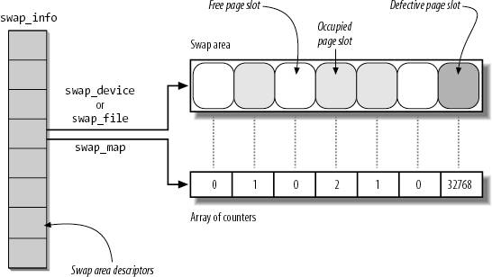
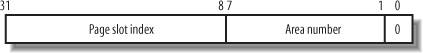
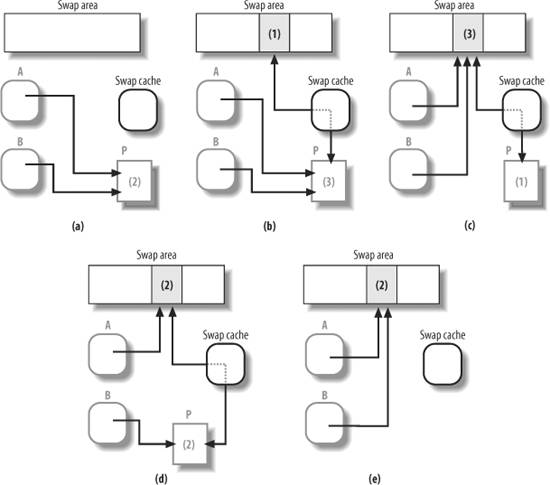

{% include JB/setup %}
{% raw %}
<div>


<a name="understandlk-CHP-17-SECT-4"></a>
<h3 class="docSection1Title">17.4. Swapping</h3><a name="IDX-CHP-17-4220"></a>
<a name="IDX-CHP-17-4221"></a>
<a name="IDX-CHP-17-4222"></a>
<p class="docText1">Swapping has been introduced to offer a backup on disk for unmapped pages. We know from the previous discussion that there are three kinds of pages that must be handled by the swapping subsystem:</p>
<ul class="calibre11"><li class="calibre12"><p class="docText1">Pages that belong to an anonymous memory region of a process (User Mode stack or heap)</p></li><li class="calibre12"><p class="docText1">Dirty pages that belong to a private memory mapping of a process</p></li><li class="calibre12"><p class="docText1">Pages that belong to an IPC shared memory region (see the section "<a class="pcalibre5 docLink pcalibre1" href="understandlk-CHP-19-SECT-3.html#understandlk-CHP-19-SECT-3.5">IPC Shared Memory</a>" in <a class="pcalibre5 docLink pcalibre1" href="understandlk-CHP-19.html#understandlk-CHP-19">Chapter 19</a>)</p></li></ul>
<p class="docText1">Like demand paging, swapping must be transparent to programs. In other words, no special instruction related to swapping needs to be inserted into the code. To understand how this can be done, recall from the section "<a class="pcalibre5 docLink pcalibre1" href="understandlk-CHP-2-SECT-4.html#understandlk-CHP-2-SECT-4.1">Regular Paging</a>" in <a class="pcalibre5 docLink pcalibre1" href="understandlk-CHP-2.html#understandlk-CHP-2">Chapter 2</a> that each Page Table entry includes a <tt class="calibre25">Present</tt> flag. The kernel exploits this flag to signal that a page belonging to a process address space has been swapped out. Besides that flag, Linux also takes advantage of the remaining bits of the Page Table entry to store into them a "swapped-out page identifier" that encodes the location of the swapped-out page on disk. When a Page Fault<a name="IDX-CHP-17-4223"></a> 
 exception occurs, the corresponding exception handler can detect that the page is not present in RAM and invoke the function that swaps in the missing page from disk.</p>
<p class="docText1">The main features of the swapping subsystem can be summarized as follows:</p>
<ul class="calibre11"><li class="calibre12"><p class="docText1">Set up "swap areas" on disk to store pages that do not have a disk image.</p></li><li class="calibre12"><p class="docText1">Manage the space on swap areas allocating and freeing "page slots" as the need occurs.</p></li><li class="calibre12"><p class="docText1">Provide functions both to "swap out" pages from RAM into a swap area and to "swap in" pages from a swap area into RAM.</p></li><li class="calibre12"><p class="docText1">Make use of "swapped-out page identifiers" in the Page Table entries of pages that are currently swapped out to keep track of the positions of data in the swap areas.</p></li></ul>
<p class="docText1">To sum up, swapping is the crowning feature of page frame reclaiming. If we want to be sure that all the page frames obtained by a process, and not only those containing pages that have an image on disk, can be reclaimed at will by the PFRA, then swapping has to be used. Of course, you might turn off swapping by using the <i class="docEmphasis">swapoff</i> command; in this case, however, disk thrashing is likely to occur sooner when the system load increases.</p>
<p class="docText1">We should also mention that swapping can be used to expand the memory address space that is effectively usable by the User Mode processes. In fact, large swap areas allow the kernel to launch several demanding applications whose total memory requests exceed the amount of physical RAM installed in the system. However, simulation of RAM is not like RAM in terms of performance. Every access by a process to a page that is currently swapped out is of several orders of magnitude longer than an access to a page in RAM. In short, if performance is of great importance, swapping should be used only as a last resort; adding RAM chips still remains the best solution to cope with increasing computing needs.</p>
<a name="understandlk-CHP-17-SECT-4.1"></a>
<h4 class="docSection2Title">17.4.1. Swap Area</h4>
<p class="docText1">The pages swapped out from memory are stored in a <span class="docEmphasis">swap area</span>, which may be implemented either as a disk partition of its own or as a file included in a larger partition. Several different swap areas<a name="IDX-CHP-17-4224"></a> 
 may be defined, up to a maximum number specified by the <tt class="calibre25">MAX_SWAPFILES</tt> macro (usually set to 32).</p>
<p class="docText1">Having multiple swap areas allows a system administrator to spread a lot of swap space among several disks so that the hardware can act on them concurrently; it also lets swap space be increased at runtime without rebooting the system.</p>
<p class="docText1">Each swap area consists of a sequence of <span class="docEmphasis">page slots</span><a name="IDX-CHP-17-4225"></a>
<a name="IDX-CHP-17-4226"></a> 
: 4,096-byte blocks used to contain a swapped-out page. The first page slot of a swap area is used to persistently store some information about the swap area; its format is described by the <tt class="calibre25">swap_header</tt> union composed of two structures, <tt class="calibre25">info</tt> and <tt class="calibre25">magic</tt>. The <tt class="calibre25">magic</tt> structure provides a string that marks part of the disk unambiguously as a swap area; it consists of just one field, <tt class="calibre25">magic.magic</tt>, which contains a 10-character "magic" string. The <tt class="calibre25">magic</tt> structure essentially allows the kernel to unambiguously identify a file or a partition as a swap area; the text of the string, namely "SWAPSPACE2," is always located at the end of the first page slot.</p>
<p class="docText1">The <tt class="calibre25">info</tt> structure includes the following fields:</p>
<dl class="docText1"><dt class="calibre7"><br class="calibre7"/><p class="calibre14"><span class="docPubcolor"><span class="docPubcolor"><span class="docMonofont">bootbits</span></span></span></p></dt>
<dd class="calibre20"><p class="docList">Not used by the swapping algorithm; this field corresponds to the first 1,024 bytes of the swap area, which may store partition data, disk labels, and so on.</p></dd><dt class="calibre7"><br class="calibre7"/><p class="calibre14"><span class="docPubcolor"><span class="docPubcolor"><span class="docMonofont">version</span></span></span></p></dt>
<dd class="calibre20"><p class="docList">Swapping algorithm version.</p></dd><dt class="calibre7"><br class="calibre7"/><p class="calibre14"><span class="docPubcolor"><span class="docPubcolor"><span class="docMonofont">last_page</span></span></span></p></dt>
<dd class="calibre20"><p class="docList">Last page slot that is effectively usable.</p></dd><dt class="calibre7"><br class="calibre7"/><p class="calibre14"><span class="docPubcolor"><span class="docPubcolor"><span class="docMonofont">nr_badpages</span></span></span></p></dt>
<dd class="calibre20"><p class="docList">Number of defective page slots.</p></dd><dt class="calibre7"><br class="calibre7"/><p class="calibre14"><span class="docPubcolor"><span class="docPubcolor"><span class="docMonofont">padding[125]</span></span></span></p></dt>
<dd class="calibre20"><p class="docList">Padding bytes.</p></dd><dt class="calibre7"><br class="calibre7"/><p class="calibre14"><span class="docPubcolor"><span class="docPubcolor"><span class="docMonofont">badpages[1]</span></span></span></p></dt>
<dd class="calibre20"><p class="docList">Up to 637 numbers specifying the location of defective page slots.</p></dd></dl>
<a name="understandlk-CHP-17-SECT-4.1.1"></a>
<h5 class="docSection3Title">17.4.1.1. Creating and activating a swap area</h5><a name="IDX-CHP-17-4227"></a>
<a name="IDX-CHP-17-4228"></a>
<a name="IDX-CHP-17-4229"></a>
<a name="IDX-CHP-17-4230"></a>
<p class="docText1">The data stored in a swap area is meaningful as long as the system is on. When the system is switched off, all processes are killed, so the data stored by processes in swap areas is discarded. For this reason, swap areas contain very little control information: essentially, the swap area type and the list of defective page slots. This control information easily fits in a single 4 KB page.</p>
<p class="docText1">Usually, the system administrator creates a swap partition when creating the other partitions on the Linux system, and then uses the <i class="docEmphasis">mkswap</i> command to set up the disk area as a new swap area. That command initializes the fields just described within the first page slot. Because the disk may include some bad blocks, the program also examines all other page slots to locate the defective ones. But executing the <i class="docEmphasis">mkswap</i> command leaves the swap area in an inactive state. Each swap area can be activated in a script file at system boot or dynamically after the system is running.</p>
<p class="docText1">Each swap area consists of one or more <span class="docEmphasis">swap extents</span><a name="IDX-CHP-17-4231"></a> 
, each of which is represented by a <tt class="calibre25">swap_extent</tt> descriptor. Each extent corresponds to a group of pagesor more accurately, page slotsthat are physically adjacent on disk. Hence, the <tt class="calibre25">swap_extent</tt> descriptor includes the index of the first page of the extent in the swap area, the length in pages of the extent, and the starting disk sector number of the extent. An ordered list of the extents that compose a swap area is created when activating the swap area itself. A swap area stored in a disk partition is composed of just one extent; conversely, a swap area stored in a regular file can be composed of several extents, because the filesystem may not have allocated the whole file in contiguous blocks on disk.</p>
<a name="understandlk-CHP-17-SECT-4.1.2"></a>
<h5 class="docSection3Title">17.4.1.2. How to distribute pages in the swap areas</h5><a name="IDX-CHP-17-4232"></a>
<a name="IDX-CHP-17-4233"></a>
<a name="IDX-CHP-17-4234"></a>
<p class="docText1">When swapping out, the kernel tries to store pages in contiguous page slots to minimize disk seek time when accessing the swap area; this is an important element of an efficient swapping algorithm.</p>
<p class="docText1">However, if more than one swap area is used, things become more complicated. Faster swap areasswap areas stored in faster disksget a higher priority. When looking for a free slot, the search starts in the swap area that has the highest priority. If there are several of them, swap areas of the same priority are cyclically selected to avoid overloading one of them. If no free slot is found in the swap areas that have the highest priority, the search continues in the swap areas that have a priority next to the highest one, and so on.</p>
<a name="understandlk-CHP-17-SECT-4.2"></a>
<h4 class="docSection2Title">17.4.2. Swap Area Descriptor</h4><a name="IDX-CHP-17-4235"></a>
<a name="IDX-CHP-17-4236"></a>
<a name="IDX-CHP-17-4237"></a>
<a name="IDX-CHP-17-4238"></a>
<a name="IDX-CHP-17-4239"></a>
<a name="IDX-CHP-17-4240"></a>
<a name="IDX-CHP-17-4241"></a>
<a name="IDX-CHP-17-4242"></a>
<a name="IDX-CHP-17-4243"></a>
<a name="IDX-CHP-17-4244"></a>
<a name="IDX-CHP-17-4245"></a>
<p class="docText1">Each active<a name="IDX-CHP-17-4246"></a> 
 swap area has its own <tt class="calibre25">swap_info_struct</tt> descriptor in memory. The fields of the descriptor are illustrated in <a class="pcalibre5 docLink pcalibre1" href="#understandlk-CHP-17-TABLE-3">Table 17-3</a>.</p>
<a name="understandlk-CHP-17-TABLE-3"></a><p class="calibre14"><table cellspacing="0" frame="hsides" rules="all" cellpadding="4" width="100%" class="calibre15"><caption class="calibre33"><h5 class="docFigureTitle">Table 17-3. Fields of a swap area descriptor</h5></caption><colgroup class="calibre16"><col class="calibre17"/><col class="calibre17"/><col class="calibre17"/></colgroup><thead class="calibre18"><tr class="calibre34"><th class="thead" scope="col"><p class="docText1"><span class="calibre5">Type</span></p></th><th class="thead" scope="col"><p class="docText1"><span class="calibre5">Field</span></p></th><th class="thead" scope="col"><p class="docText1"><span class="calibre5">Description</span></p></th></tr></thead><tr class="calibre2"><td class="docTableCell"><p class="docText2"><tt class="calibre25">unsigned int</tt></p></td><td class="docTableCell"><p class="docText2"><tt class="calibre25">flags</tt></p></td><td class="docTableCell"><p class="docText2">Swap area flags</p></td></tr><tr class="calibre2"><td class="docTableCell"><p class="docText2"><tt class="calibre25">spinlock_t</tt></p></td><td class="docTableCell"><p class="docText2"><tt class="calibre25">sdev_lock</tt></p></td><td class="docTableCell"><p class="docText2">Spin lock protecting the swap area</p></td></tr><tr class="calibre2"><td class="docTableCell"><p class="docText2"><tt class="calibre25">struct file *</tt></p></td><td class="docTableCell"><p class="docText2"><tt class="calibre25">swap_file</tt></p></td><td class="docTableCell"><p class="docText2">Pointer to the file object of the regular file or device file that stores the swap area</p></td></tr><tr class="calibre2"><td class="docTableCell"><p class="docText2"><tt class="calibre25">struct</tt></p><p class="docText2"><tt class="calibre25">block_device *</tt></p></td><td class="docTableCell"><p class="docText2"><tt class="calibre25">bdev</tt></p></td><td class="docTableCell"><p class="docText2">Descriptor of the block device containing the swap area</p></td></tr><tr class="calibre2"><td class="docTableCell"><p class="docText2"><tt class="calibre25">struct list head</tt></p></td><td class="docTableCell"><p class="docText2"><tt class="calibre25">extent_list</tt></p></td><td class="docTableCell"><p class="docText2">Head of the list of extents that compose the swap area</p></td></tr><tr class="calibre2"><td class="docTableCell"><p class="docText2">int</p></td><td class="docTableCell"><p class="docText2">nr_extents</p></td><td class="docTableCell"><p class="docText2">Number of extents composing the swap area</p></td></tr><tr class="calibre2"><td class="docTableCell"><p class="docText2">struct</p><p class="docText2">swap_extent *</p></td><td class="docTableCell"><p class="docText2">curr_swap_extent</p></td><td class="docTableCell"><p class="docText2">Pointer to the most recently used extent descriptor</p></td></tr><tr class="calibre2"><td class="docTableCell"><p class="docText2"><tt class="calibre25">unsigned int</tt></p></td><td class="docTableCell"><p class="docText2"><tt class="calibre25">old_block_size</tt></p></td><td class="docTableCell"><p class="docText2">Natural block size of the partition containing the swap area</p></td></tr><tr class="calibre2"><td class="docTableCell"><p class="docText2"><tt class="calibre25">unsigned short *</tt></p></td><td class="docTableCell"><p class="docText2"><tt class="calibre25">swap_map</tt></p></td><td class="docTableCell"><p class="docText2">Pointer to an array of counters, one for each swap area page slot</p></td></tr><tr class="calibre2"><td class="docTableCell"><p class="docText2"><tt class="calibre25">unsigned int</tt></p></td><td class="docTableCell"><p class="docText2"><tt class="calibre25">lowest_bit</tt></p></td><td class="docTableCell"><p class="docText2">First page slot to be scanned when searching for a free one</p></td></tr><tr class="calibre2"><td class="docTableCell"><p class="docText2"><tt class="calibre25">unsigned int</tt></p></td><td class="docTableCell"><p class="docText2"><tt class="calibre25">highest_bit</tt></p></td><td class="docTableCell"><p class="docText2">Last page slot to be scanned when searching for a free one</p></td></tr><tr class="calibre2"><td class="docTableCell"><p class="docText2"><tt class="calibre25">unsigned int</tt></p></td><td class="docTableCell"><p class="docText2"><tt class="calibre25">cluster_next</tt></p></td><td class="docTableCell"><p class="docText2">Next page slot to be scanned when searching for a free one</p></td></tr><tr class="calibre2"><td class="docTableCell"><p class="docText2"><tt class="calibre25">unsigned int</tt></p></td><td class="docTableCell"><p class="docText2"><tt class="calibre25">cluster_nr</tt></p></td><td class="docTableCell"><p class="docText2">Number of free page slot allocations before restarting from the beginning</p></td></tr><tr class="calibre2"><td class="docTableCell"><p class="docText2"><tt class="calibre25">int</tt></p></td><td class="docTableCell"><p class="docText2"><tt class="calibre25">prio</tt></p></td><td class="docTableCell"><p class="docText2">Swap area priority</p></td></tr><tr class="calibre2"><td class="docTableCell"><p class="docText2"><tt class="calibre25">int</tt></p></td><td class="docTableCell"><p class="docText2"><tt class="calibre25">pages</tt></p></td><td class="docTableCell"><p class="docText2">Number of usable page slots</p></td></tr><tr class="calibre2"><td class="docTableCell"><p class="docText2"><tt class="calibre25">unsigned long</tt></p></td><td class="docTableCell"><p class="docText2"><tt class="calibre25">max</tt></p></td><td class="docTableCell"><p class="docText2">Size of swap area in pages</p></td></tr><tr class="calibre2"><td class="docTableCell"><p class="docText2">unsigned long</p></td><td class="docTableCell"><p class="docText2">inuse_pages</p></td><td class="docTableCell"><p class="docText2">Number of used page slots in the swap area</p></td></tr><tr class="calibre2"><td class="docTableCell"><p class="docText2"><tt class="calibre25">int</tt></p></td><td class="docTableCell"><p class="docText2"><tt class="calibre25">next</tt></p></td><td class="docTableCell"><p class="docText2">Pointer to next swap area descriptor</p></td></tr></table></p><br class="calibre7"/>
<p class="docText1">The <tt class="calibre25">flags</tt> field includes three overlapping subfields:</p>
<dl class="docText1"><dt class="calibre7"><br class="calibre7"/><p class="calibre14"><span class="docPubcolor"><span class="docPubcolor"><span class="docMonofont">SWP_USED</span></span></span></p></dt>
<dd class="calibre20"><p class="docList">1 if the swap area is active; 0 if it is inactive.</p></dd><dt class="calibre7"><br class="calibre7"/><p class="calibre14"><span class="docPubcolor"><span class="docPubcolor"><span class="docMonofont">SWP_WRITEOK</span></span></span></p></dt>
<dd class="calibre20"><p class="docList">1 if it is possible to write into the swap area; 0 if the swap area is read-only (it is being activated or inactivated).</p></dd><dt class="calibre7"><br class="calibre7"/><p class="calibre14"><span class="docPubcolor"><span class="docPubcolor"><span class="docMonofont">SWP_ACTIVE</span></span></span></p></dt>
<dd class="calibre20"><p class="docList">This 2-bit field is actually the combination of <tt class="calibre25">SWP_USED</tt> and <tt class="calibre25">SWP_WRITEOK</tt>; the flag is set when both the previous flags are set.</p></dd></dl>
<p class="docText1">The <tt class="calibre25">swap_map</tt> field points to an array of counters, one for each swap area page slot. If the counter is equal to 0, the page slot is free; if it is positive, the page slot is filled with a swapped-out page. Essentially, the page slot counter denotes the number of processes that share the swapped-out page. If the counter has the value <tt class="calibre25">SWAP_MAP_MAX</tt> (equal to 32, 767), the page stored in the page slot is "permanent" and cannot be removed from the corresponding slot. If the counter has the value <tt class="calibre25">SWAP_MAP_BAD</tt> (equal to 32,768), the page slot is considered defective, and thus unusable.<sup class="docFootnote"><a class="pcalibre5 docLink pcalibre1" href="#understandlk-CHP-17-FN7">[*]</a></sup></p><blockquote class="calibre22"><p class="docFootnote1"><sup class="calibre24"><a name="understandlk-CHP-17-FN7">[*]</a></sup> "Permanent" page slots protect against overflows of <tt class="calibre42">swap_map</tt> counters. Without them, valid page slots could become "defective" if they are referenced too many times, thus leading to data losses. However, no one really expects that a page slot counter could reach the value 32,768. It's just a "belt and suspenders" approach.</p></blockquote>
<p class="docText1">The <tt class="calibre25">prio</tt> field is a signed integer that denotes the order in which the swap subsystem should consider each swap area.</p>
<p class="docText1">The <tt class="calibre25">sdev_lock</tt> field is a spin lock that protects the swap area's data structureschiefly, the swap descriptoragainst concurrent accesses in SMP systems.</p>
<p class="docText1">The <tt class="calibre25">swap_info</tt> array includes <tt class="calibre25">MAX_SWAPFILES</tt> swap area descriptors. Only the areas whose <tt class="calibre25">SWP_USED</tt> flags are set are used, because they are the activated areas. <a class="pcalibre5 docLink pcalibre1" href="#understandlk-CHP-17-FIG-6">Figure 17-6</a> illustrates the <tt class="calibre25">swap_info</tt> array, one swap area, and the corresponding array of counters.</p>
<a name="understandlk-CHP-17-FIG-6"></a><p class="calibre14"><center class="calibre8">
<h5 class="docFigureTitle">Figure 17-6. Swap area data structures</h5>
</center></p><br class="calibre7"/>
<p class="docText1">The <tt class="calibre25">nr_swapfiles</tt> variable stores the index of the last array element that contains, or that has contained, a used swap area descriptor. Despite its name, the variable <span class="docEmphasis">does not</span> contain the number of active swap areas.</p>
<p class="docText1">Descriptors of active swap areas are also inserted into a list sorted by the swap area priority. The list is implemented through the <tt class="calibre25">next</tt> field of the swap area descriptor, which stores the index of the next descriptor in the <tt class="calibre25">swap_info</tt> array. This use of the field as an index is different from most fields with the name <tt class="calibre25">next</tt>, which are usually pointers.</p>
<p class="docText1">The <tt class="calibre25">swap_list</tt> variable, of type <tt class="calibre25">swap_list_t</tt>, includes the following fields:</p>
<dl class="docText1"><dt class="calibre7"><br class="calibre7"/><p class="calibre14"><span class="docPubcolor"><span class="docPubcolor"><span class="docMonofont">head</span></span></span></p></dt>
<dd class="calibre20"><p class="docList">Index in the <tt class="calibre25">swap_info</tt> array of the first list element.</p></dd><dt class="calibre7"><br class="calibre7"/><p class="calibre14"><span class="docPubcolor"><span class="docPubcolor"><span class="docMonofont">next</span></span></span></p></dt>
<dd class="calibre20"><p class="docList">Index in the <tt class="calibre25">swap_info</tt> array of the descriptor of the next swap area to be selected for swapping out pages. This field is used to implement a Round Robin algorithm among maximum-priority swap areas with free slots.</p></dd></dl>
<p class="docText1">The <tt class="calibre25">swaplock</tt> spin lock protects the list against concurrent accesses in multiprocessor systems.</p>
<p class="docText1">The <tt class="calibre25">max</tt> field of the swap area descriptor stores the size of the swap area in pages, while the <tt class="calibre25">pages</tt> field stores the number of usable page slots. These numbers differ because <tt class="calibre25">pages</tt> does not take the first page slot and the defective page slots into consideration.</p>
<p class="docText1">Finally, the <tt class="calibre25">nr_swap_pages</tt> variable contains the number of available (free and nondefective) page slots in all active swap areas, while the <tt class="calibre25">total_swap_pages</tt> variable contains the total number of nondefective page slots.</p>
<a name="understandlk-CHP-17-SECT-4.3"></a>
<h4 class="docSection2Title">17.4.3. Swapped-Out Page Identifier</h4><a name="IDX-CHP-17-4247"></a>
<a name="IDX-CHP-17-4248"></a>
<a name="IDX-CHP-17-4249"></a>
<a name="IDX-CHP-17-4250"></a>
<a name="IDX-CHP-17-4251"></a>
<a name="IDX-CHP-17-4252"></a>
<a name="IDX-CHP-17-4253"></a>
<p class="docText1">A swapped-out page is uniquely identified quite simply by specifying the index of the swap area in the <tt class="calibre25">swap_info</tt> array and the page slot index inside the swap area. Because the first page (with index 0) of the swap area is reserved for the <tt class="calibre25">swap_header</tt> union discussed earlier, the first useful page slot has index 1. The format of a <span class="docEmphasis">swapped-out page identifier</span> is illustrated in <a class="pcalibre5 docLink pcalibre1" href="#understandlk-CHP-17-FIG-7">Figure 17-7</a>.</p>
<a name="understandlk-CHP-17-FIG-7"></a><p class="calibre14"><center class="calibre8">
<h5 class="docFigureTitle">Figure 17-7. Swapped-out page identifier</h5>
</center></p><br class="calibre7"/>
<p class="docText1">The <tt class="calibre25">swp_entry(type,offset)</tt> function constructs a swapped-out page identifier from the swap area index <tt class="calibre25">type</tt> and the page slot index <tt class="calibre25">offset</tt>. Conversely, the <tt class="calibre25">swp_type</tt> and <tt class="calibre25">swp_offset</tt> functions extract from a swapped-out page identifier the swap area index and the page slot index, respectively.</p>
<p class="docText1">When a page is swapped out, its identifier is inserted as the page's entry into the Page Table so the page can be found again when needed. Notice that the least-significant bit of such an identifier, which corresponds to the <tt class="calibre25">Present</tt> flag, is always cleared to denote the fact that the page is not currently in RAM. However, at least one of the remaining 31 bits has to be set because no page is ever stored in slot 0 of swap area 0. It is therefore possible to identify three different cases from the value of a Page Table entry:</p>
<a name="IDX-CHP-17-4254"></a><dl class="docText1"><dt class="calibre7"><br class="calibre7"/><p class="calibre14"><span class="docPubcolor"><span class="docEmphasis">Null entry</span></span></p></dt>
<dd class="calibre20"><p class="docList">The page does not belong to the process address space, or the underlying page frame has not yet been assigned to the process (demand paging<a name="IDX-CHP-17-4254"></a> 
).</p></dd><dt class="calibre7"><br class="calibre7"/><p class="calibre14"><span class="docPubcolor"><span class="docEmphasis">First 31 most-significant bits not all equal to 0, last bit equal to 0</span></span></p></dt>
<dd class="calibre20"><p class="docList">The page is currently swapped out.</p></dd><dt class="calibre7"><br class="calibre7"/><p class="calibre14"><span class="docPubcolor"><span class="docEmphasis">Least-significant bit equal to 1</span></span></p></dt>
<dd class="calibre20"><p class="docList">The page is contained in RAM.</p></dd></dl>
<p class="docText1">The maximum size of a swap area is determined by the number of bits available to identify a slot. On the 80 x 86 architecture, the 24 bits available limit the size of a swap area to 2<sup class="calibre37">24</sup> slots (that is, to 64 GB).</p>
<p class="docText1">Because a page may belong to the address spaces<a name="IDX-CHP-17-4255"></a> 
 of several processes (see the earlier section "<a class="pcalibre5 docLink pcalibre1" href="understandlk-CHP-17-SECT-2.html#understandlk-CHP-17-SECT-2">Reverse Mapping</a>"), it may be swapped out from the address space of one process and still remain in main memory; therefore, it is possible to swap out the same page several times. A page is physically swapped out and stored just once, of course, but each subsequent attempt to swap it out increases the <tt class="calibre25">swap_map</tt> counter.</p>
<p class="docText1">The <tt class="calibre25">swap_duplicate( )</tt> function is usually invoked while trying to swap out an already swapped-out page. It simply verifies that the swapped-out page identifier passed as its parameter is valid and increases the corresponding <tt class="calibre25">swap_map</tt> counter. More precisely, it performs the following actions:</p>
<div class="calibre44"><ol class="docList1" type="1"><li class="calibre12"><div class="calibre45"><p class="docList">Uses the <tt class="calibre25">swp_type</tt> and <tt class="calibre25">swp_offset</tt> functions to extract the swap area number and the page slot index from the parameter.</p></div></li><li class="calibre12"><div class="calibre45"><p class="docList">Checks whether the swap area number identified is active; if not, it returns 0 (invalid identifier).</p></div></li><li class="calibre12"><div class="calibre45"><p class="docList">Checks whether the page slot is valid and not free (its <tt class="calibre25">swap_map</tt> counter is greater than 0 and less than <tt class="calibre25">SWAP_MAP_BAD</tt>); if not, it returns 0 (invalid identifier).</p></div></li><li class="calibre12"><div class="calibre45"><p class="docList">Otherwise, the swapped-out page identifier locates a valid page. Increases the <tt class="calibre25">swap_map</tt> counter of the page slot if it has not already reached the value <tt class="calibre25">SWAP_MAP_MAX</tt>.</p></div></li><li class="calibre12"><div class="calibre45"><p class="docList">Returns 1 (valid identifier).</p></div></li></ol></div>
<a name="understandlk-CHP-17-SECT-4.4"></a>
<h4 class="docSection2Title">17.4.4. Activating and Deactivating a Swap Area</h4><a name="IDX-CHP-17-4256"></a>
<a name="IDX-CHP-17-4257"></a>
<a name="IDX-CHP-17-4258"></a>
<a name="IDX-CHP-17-4259"></a>
<a name="IDX-CHP-17-4260"></a>
<a name="IDX-CHP-17-4261"></a>
<a name="IDX-CHP-17-4262"></a>
<p class="docText1">Once a swap area is initialized, the superuser (or, more precisely, every user having the <tt class="calibre25">CAP_SYS_ADMIN</tt> capability, as described in the section "<a class="pcalibre5 docLink pcalibre1" href="understandlk-CHP-20-SECT-1.html#understandlk-CHP-20-SECT-1.1">Process Credentials and Capabilities</a>" in <a class="pcalibre5 docLink pcalibre1" href="understandlk-CHP-20.html#understandlk-CHP-20">Chapter 20</a>) may use the <i class="docEmphasis">swapon</i> and <i class="docEmphasis">swapoff</i> programs to activate and deactivate the swap area, respectively. These programs use the <tt class="calibre25">swapon( )</tt> and <tt class="calibre25">swapoff( )</tt> system calls; we'll briefly sketch out the corresponding service routines.</p>
<a name="understandlk-CHP-17-SECT-4.4.1"></a>
<h5 class="docSection3Title">17.4.4.1. The sys_swapon( ) service routine</h5>
<p class="docText1">The <tt class="calibre25">sys_swapon( )</tt> service routine receives the following as its parameters:</p>
<dl class="docText1"><dt class="calibre7"><br class="calibre7"/><p class="calibre14"><span class="docPubcolor"><span class="docPubcolor"><span class="docMonofont">specialfile</span></span></span></p></dt>
<dd class="calibre20"><p class="docList">This parameter points to the pathname (in the User Mode address space) of the device file (partition) or plain file used to implement the swap area.</p></dd><dt class="calibre7"><br class="calibre7"/><p class="calibre14"><span class="docPubcolor"><span class="docPubcolor"><span class="docMonofont">swap_flags</span></span></span></p></dt>
<dd class="calibre20"><p class="docList">This parameter consists of a single <tt class="calibre25">SWAP_FLAG_PREFER</tt> bit plus 31 bits of priority of the swap area (these bits are significant only if the <tt class="calibre25">SWAP_FLAG_PREFER</tt> bit is on).</p></dd></dl>
<p class="docText1">The function checks the fields of the <tt class="calibre25">swap_header</tt> union that was put in the first slot when the swap area was created. The function performs these main steps:</p>
<div class="calibre44"><ol class="docList1" type="1"><li class="calibre12"><div class="calibre45"><p class="docList">Checks that the current process has the <tt class="calibre25">CAP_SYS_ADMIN</tt> capability.</p></div></li><li class="calibre12"><div class="calibre45"><p class="docList">Looks in the first <tt class="calibre25">nr_swapfiles</tt> components of the <tt class="calibre25">swap_info</tt> array of swap area descriptors for the first descriptor having the <tt class="calibre25">SWP_USED</tt> flag cleared, meaning that the corresponding swap area is inactive. If an inactive swap area is found, it goes to step 4.</p></div></li><li class="calibre12"><div class="calibre45"><p class="docList">The new swap area array index is equal to <tt class="calibre25">nr_swapfiles</tt>: it checks that the number of bits reserved for the swap area index is sufficiently large to encode the new index; if not, returns an error code; otherwise, it increases by one the value of <tt class="calibre25">nr_swapfiles</tt>.</p></div></li><li class="calibre12"><div class="calibre45"><p class="docList">An index of an unused swap area has been found: it initializes the descriptor's fields; in particular, it sets <tt class="calibre25">flags</tt> to <tt class="calibre25">SWP_USED</tt>, and sets <tt class="calibre25">lowest_bit</tt> and <tt class="calibre25">highest_bit</tt> to 0.</p></div></li><li class="calibre12"><div class="calibre45"><p class="docList">If the <tt class="calibre25">swap_flags</tt> parameter specifies a priority for the new swap area, the function sets the <tt class="calibre25">prio</tt> field of the descriptor. Otherwise, it initializes the field to one less than the lowest priority among all active swap areas (thus assuming that the last activated swap area is on the slowest block device). If no other swap areas are already active, the function assigns the value -1.</p></div></li><li class="calibre12"><div class="calibre45"><p class="docList">Copies the string pointed to by the <tt class="calibre25">specialfile</tt> parameter from the User Mode address space.</p></div></li><li class="calibre12"><div class="calibre45"><p class="docList">Invokes <tt class="calibre25">filp_open( )</tt> to open the file specified by the <tt class="calibre25">specialfile</tt> parameter (see the section "<a class="pcalibre5 docLink pcalibre1" href="understandlk-CHP-12-SECT-6.html#understandlk-CHP-12-SECT-6.1">The open( ) System Call</a>" in <a class="pcalibre5 docLink pcalibre1" href="understandlk-CHP-12.html#understandlk-CHP-12">Chapter 12</a>).</p></div></li><li class="calibre12"><div class="calibre45"><p class="docList">Stores the addresses of the file object returned by <tt class="calibre25">filp_open( )</tt> in the <tt class="calibre25">swap_file</tt> field of the swap area descriptor.</p></div></li><li class="calibre12"><div class="calibre45"><p class="docList">Makes sure that the swap area is not already activated by looking at the other active swap areas in <tt class="calibre25">swap_info</tt>. This is done by checking the addresses of the <tt class="calibre25">address_space</tt> objects stored in the <tt class="calibre25">swap_file-&gt;f_mapping</tt> field of the swap area descriptors. If the swap area is already active, it returns an error code.</p></div></li><li class="calibre12"><div class="calibre45"><p class="docList">If the <tt class="calibre25">specialfile</tt> parameter identifies a block device file, it performs the following substeps:</p><div class="calibre44"><ol class="docList4" type="a"><li class="calibre12"><div class="calibre45"><p class="docList">Invokes <tt class="calibre25">bd_claim( )</tt> to set the swapping subsystem as the holder of the block device (see the section "<a class="pcalibre5 docLink pcalibre1" href="understandlk-CHP-14-SECT-4.html#understandlk-CHP-14-SECT-4.1">Block Devices</a>" in <a class="pcalibre5 docLink pcalibre1" href="understandlk-CHP-14.html#understandlk-CHP-14">Chapter 14</a>). If the block device already has a holder, it returns an error code.</p></div></li><li class="calibre12"><div class="calibre45"><p class="docList">Stores the address of the <tt class="calibre25">block_device</tt> descriptor in the <tt class="calibre25">bdev</tt> field of the swap area descriptor.</p></div></li><li class="calibre12"><div class="calibre45"><p class="docList">Stores the current block size of the device in the <tt class="calibre25">old_block_size</tt> field of the swap area descriptor, then sets the block size of the device to 4,096 bytes (the page size).</p></div></li></ol></div></div></li><li class="calibre12"><div class="calibre45"><p class="docList">If the <tt class="calibre25">specialfile</tt> parameter identifies a regular file, it performs the following substeps:</p><div class="calibre44"><ol class="docList4" type="a"><li class="calibre12"><div class="calibre45"><p class="docList">Checks the <tt class="calibre25">S_SWAPFILE</tt> field of the <tt class="calibre25">i_flags</tt> field of the file's inode. If this flag is set, it returns an error code because the file is already being used as a swap area.</p></div></li><li class="calibre12"><div class="calibre45"><p class="docList">Stores the descriptor address of the block device containing the file in the <tt class="calibre25">bdev</tt> field of the swap area descriptor.</p></div></li></ol></div></div></li><li class="calibre12"><div class="calibre45"><p class="docList">Reads the <tt class="calibre25">swap_header</tt> descriptor stored in slot 0 of the swap area. To that end, it invokes <tt class="calibre25">read_cache_page( )</tt> passing as parameters the <tt class="calibre25">address_space</tt> object pointed to by <tt class="calibre25">swap_file-&gt;f_mapping</tt>, the page index 0, the address of the file's <tt class="calibre25">readpage</tt> method (stored in <tt class="calibre25">swap_file-&gt;f_mapping-&gt;a_ops-&gt;readpage</tt>), and the pointer to the file object <tt class="calibre25">swap_file</tt>. Waits until the page has been read into memory.</p></div></li><li class="calibre12"><div class="calibre45"><p class="docList">Checks that the magic string in the last 10 characters of the first page is equal to "SWAPSPACE2." If not, it returns an error code.</p></div></li><li class="calibre12"><div class="calibre45"><p class="docList">Initializes the <tt class="calibre25">lowest_bit</tt> and <tt class="calibre25">highest_bit</tt> fields of the swap area descriptor according to the size of the swap area stored in the <tt class="calibre25">info.last_page</tt> field of the <tt class="calibre25">swap_header</tt> union.</p></div></li><li class="calibre12"><div class="calibre45"><p class="docList">Invokes <tt class="calibre25">vmalloc( )</tt> to create the array of counters associated with the new swap area and stores its address in the <tt class="calibre25">swap_map</tt> field of the swap descriptor. Initializes the elements of the array to 0 or to <tt class="calibre25">SWAP_MAP_BAD</tt>, according to the list of defective page slots stored in the <tt class="calibre25">info.bad_pages</tt> field of the <tt class="calibre25">swap_header</tt> union.</p></div></li><li class="calibre12"><div class="calibre45"><p class="docList">Computes the number of useful page slots by accessing the <tt class="calibre25">info.last_page</tt> and <tt class="calibre25">info.nr_badpages</tt> fields in the first page slot, and stores it in the <tt class="calibre25">pages</tt> field of the swap area descriptor. Also sets the <tt class="calibre25">max</tt> field with the total number of pages in the swap area.</p></div></li><li class="calibre12"><div class="calibre45"><p class="docList">Builds the <tt class="calibre25">extent_list</tt> list of swap extents for the new swap area (only one if the swap area is a disk partition), and sets properly the <tt class="calibre25">nr_extents</tt> and <tt class="calibre25">curr_swap_extent</tt> fields in the swap area descriptor.</p></div></li><li class="calibre12"><div class="calibre45"><p class="docList">Sets the <tt class="calibre25">flags</tt> field of the swap area descriptor to <tt class="calibre25">SWP_ACTIVE</tt>.</p></div></li><li class="calibre12"><div class="calibre45"><p class="docList">Updates the <tt class="calibre25">nr_good_pages</tt>, <tt class="calibre25">nr_swap_pages</tt>, and <tt class="calibre25">total_swap_pages</tt> global variables.</p></div></li><li class="calibre12"><div class="calibre45"><p class="docList">Inserts the swap area descriptor in the list to which the <tt class="calibre25">swap_list</tt> variable points.</p></div></li><li class="calibre12"><div class="calibre45"><p class="docList">Returns 0 (success).</p></div></li></ol></div>
<a name="understandlk-CHP-17-SECT-4.4.2"></a>
<h5 class="docSection3Title">17.4.4.2. The sys_swapoff( ) service routine</h5><a name="IDX-CHP-17-4263"></a>
<a name="IDX-CHP-17-4264"></a>
<a name="IDX-CHP-17-4265"></a>
<a name="IDX-CHP-17-4266"></a>
<a name="IDX-CHP-17-4267"></a>
<p class="docText1">The <tt class="calibre25">sys_swapoff( )</tt> service routine deactivates a swap area identified by the parameter <tt class="calibre25">specialfile</tt>. It is much more complex and time-consuming than <tt class="calibre25">sys_swapon( )</tt>, since the partition to be deactivated might still contain pages that belong to several processes. The function is thus forced to scan the swap area and to swap in all existing pages. Because each swap-in requires a new page frame, it might fail if there are no free page frames left. In this case, the function returns an error code. All this is achieved by performing the following major steps:</p>
<div class="calibre44"><ol class="docList1" type="1"><li class="calibre12"><div class="calibre45"><p class="docList">Checks that the current process has the <tt class="calibre25">CAP_SYS_ADMIN</tt> capability.</p></div></li><li class="calibre12"><div class="calibre45"><p class="docList">Copies the string pointed to by the <tt class="calibre25">specialfile</tt> parameter in kernel space.</p></div></li><li class="calibre12"><div class="calibre45"><p class="docList">Invokes <tt class="calibre25">filp_open( )</tt> to open the file referenced by the <tt class="calibre25">specialfile</tt> parameter; as usual, this function returns the address of a file object.</p></div></li><li class="calibre12"><div class="calibre45"><p class="docList">Scans the <tt class="calibre25">swap_list</tt> list of the swap area descriptor, and compares the address of the file object returned by <tt class="calibre25">filp_open( )</tt> with the addresses stored in the <tt class="calibre25">swap_file</tt> fields of the active swap area descriptors. If no match is found, an invalid parameter was passed to the function, so it returns an error code.</p></div></li><li class="calibre12"><div class="calibre45"><p class="docList">Invokes <tt class="calibre25">cap_vm_enough_memory( )</tt> to check whether there are enough free page frames to swap in all pages stored in the swap area. If not, the swap area cannot be deactivated; it releases the file object and returns an error code. This is only a rough check, but it could save the kernel from a lot of useless disk activity. While performing this check, <tt class="calibre25">cap_vm_enough_memory( )</tt> takes into account the page frames allocated through slab caches having the <tt class="calibre25">SLAB_RECLAIM_ACCOUNT</tt> flag set (see the section "<a class="pcalibre5 docLink pcalibre1" href="understandlk-CHP-8-SECT-2.html#understandlk-CHP-8-SECT-2.5">Interfacing the Slab Allocator with the Zoned Page Frame Allocator</a>" in <a class="pcalibre5 docLink pcalibre1" href="understandlk-CHP-8.html#understandlk-CHP-8">Chapter 8</a>). The number of such pages, which are considered as reclaimable, is stored in the <tt class="calibre25">slab_reclaim_pages</tt> variable.</p></div></li><li class="calibre12"><div class="calibre45"><p class="docList">Removes the swap area descriptor from the <tt class="calibre25">swap_list</tt> list.</p></div></li><li class="calibre12"><div class="calibre45"><p class="docList">Updates the <tt class="calibre25">nr_swap_pages</tt> and <tt class="calibre25">total_swap_pages</tt> variables by subtracting the value in the <tt class="calibre25">pages</tt> field of the swap area descriptor.</p></div></li><li class="calibre12"><div class="calibre45"><p class="docList">Clears the <tt class="calibre25">SWP_WRITEOK</tt> flag in the <tt class="calibre25">flags</tt> field of the swap area descriptor; this forbids the PFRA from swapping out more pages in the swap area.</p></div></li><li class="calibre12"><div class="calibre45"><p class="docList">Invokes <tt class="calibre25">try_to_unuse( )</tt> (see below) to successively force all pages left in the swap area into RAM and to correspondingly update the Page Tables of the processes that use these pages. While executing this function, the current process, which is executing the <i class="docEmphasis">swapoff</i> command, has the <tt class="calibre25">PF_SWAPOFF</tt> flag set. Setting this flag has just one consequence: in case of a dramatic shortage of page frames, the <tt class="calibre25">select_bad_process( )</tt> function will be forced to select and kill this process! (See the section "<a class="pcalibre5 docLink pcalibre1" href="understandlk-CHP-17-SECT-3.html#understandlk-CHP-17-SECT-3.5">The Out of Memory Killer</a>" earlier in this chapter.)</p></div></li><li class="calibre12"><div class="calibre45"><p class="docList">Waits until the block device driver that contains the swap area is unplugged (see the section "<a class="pcalibre5 docLink pcalibre1" href="understandlk-CHP-14-SECT-3.html#understandlk-CHP-14-SECT-3.3">Activating the Block Device Driver</a>" in <a class="pcalibre5 docLink pcalibre1" href="understandlk-CHP-14.html#understandlk-CHP-14">Chapter 14</a>). In this way, the reading requests submitted by <tt class="calibre25">TRy_to_unuse( )</tt> will be handled by the driver before the swap area is deactivated.</p></div></li><li class="calibre12"><div class="calibre45"><p class="docList">If <tt class="calibre25">TRy_to_unuse( )</tt> fails in allocating all requested page frames, the swap area cannot be deactivated. Therefore, the function executes the following substeps:</p><div class="calibre44"><ol class="docList4" type="a"><li class="calibre12"><div class="calibre45"><p class="docList">Reinserts the swap area descriptor in the <tt class="calibre25">swap_list</tt> list and sets its <tt class="calibre25">flags</tt> field to <tt class="calibre25">SWP_WRITEOK</tt>.</p></div></li><li class="calibre12"><div class="calibre45"><p class="docList">Restores the original contents of the <tt class="calibre25">nr_swap_pages</tt> and <tt class="calibre25">total_swap_pages</tt> variables by adding the value in the <tt class="calibre25">pages</tt> field of the swap area descriptor.</p></div></li><li class="calibre12"><div class="calibre45"><p class="docList">Invokes <tt class="calibre25">filp_close( )</tt> to close the file opened in step 3 (see the section "<a class="pcalibre5 docLink pcalibre1" href="understandlk-CHP-12-SECT-6.html#understandlk-CHP-12-SECT-6.3">The close( ) System Call</a>" in <a class="pcalibre5 docLink pcalibre1" href="understandlk-CHP-12.html#understandlk-CHP-12">Chapter 12</a>), and returns an error code.</p></div></li></ol></div></div></li><li class="calibre12"><div class="calibre45"><p class="docList">Otherwise, all used page slots have been successfully transferred to RAM. Therefore, the function executes the following substeps:</p><div class="calibre44"><ol class="docList4" type="a"><li class="calibre12"><div class="calibre45"><p class="docList">Releases the memory areas used to store the <tt class="calibre25">swap_map</tt> array and the extent descriptors.</p></div></li><li class="calibre12"><div class="calibre45"><p class="docList">If the swap area is stored in a disk partition, it restores the block size to its original value, which is stored in the <tt class="calibre25">old_block_size</tt> field of the swap area descriptor; moreover, it invokes the <tt class="calibre25">bd_release( )</tt> function so that the swap subsystem no longer holds the block device (see step 10a in the description of <tt class="calibre25">sys_swapon( )</tt>).</p></div></li><li class="calibre12"><div class="calibre45"><p class="docList">If the swap area is stored in a regular file, it clears the <tt class="calibre25">S_SWAPFILE</tt> flag of the file's inode.</p></div></li><li class="calibre12"><div class="calibre45"><p class="docList">Invokes <tt class="calibre25">filp_close( )</tt> twice, the first time on the <tt class="calibre25">swap_file</tt> file object, the second time on the object returned by <tt class="calibre25">filp_open( )</tt> in step 3.</p></div></li><li class="calibre12"><div class="calibre45"><p class="docList">Returns 0 (success).</p></div></li></ol></div></div></li></ol></div>
<a name="understandlk-CHP-17-SECT-4.4.3"></a>
<h5 class="docSection3Title">17.4.4.3. The try_to_unuse( ) function</h5><a name="IDX-CHP-17-4268"></a>
<a name="IDX-CHP-17-4269"></a>
<a name="IDX-CHP-17-4270"></a>
<a name="IDX-CHP-17-4271"></a>
<a name="IDX-CHP-17-4272"></a>
<a name="IDX-CHP-17-4273"></a>
<p class="docText1">The <tt class="calibre25">TRy_to_unuse( )</tt> function acts on an index parameter that identifies the swap area to be emptied; it swaps in pages and updates all the Page Tables of processes that have swapped out pages in this swap area. To that end, the function visits the address spaces of all kernel threads<a name="IDX-CHP-17-4274"></a> 
 and processes, starting with the <tt class="calibre25">init_mm</tt> memory descriptor that is used as a marker. It is a time-consuming function that runs mostly with the interrupts enabled. Synchronization with other processes is therefore critical.</p>
<p class="docText1">The <tt class="calibre25">TRy_to_unuse( )</tt> function scans the <tt class="calibre25">swap_map</tt> array of the swap area. When the function finds a in-use page slot, it first swaps in the page, and then starts looking for the processes that reference the page. The ordering of these two operations is crucial to avoid race conditions. While the I/O data transfer is ongoing, the page is locked, so no process can access it. Once the I/O data transfer completes, the page is locked again by <tt class="calibre25">try_to_unuse( )</tt>, so it cannot be swapped out again by another kernel control path. Race conditions are also avoided because each process looks up the page cache before starting a swap-in or swap-out operation (see the later section "<a class="pcalibre5 docLink pcalibre1" href="#understandlk-CHP-17-SECT-4.6">The Swap Cache</a>"). Finally, the swap area considered by <tt class="calibre25">try_to_unuse( )</tt> is marked as nonwritable (<tt class="calibre25">SWP_WRITEOK</tt> flag is not set), so no process can perform a swap-out on a page slot of this area.</p>
<p class="docText1">However, <tt class="calibre25">try_to_unuse( )</tt> might be forced to scan the <tt class="calibre25">swap_map</tt> array of usage counters of the swap area several times. This is because memory regions<a name="IDX-CHP-17-4275"></a> 
 that contain references to swapped-out pages might disappear during one scan and later reappear in the process lists.</p>
<p class="docText1">For instance, recall the description of the <tt class="calibre25">do_munmap( )</tt> function (in the section "<a class="pcalibre5 docLink pcalibre1" href="understandlk-CHP-9-SECT-3.html#understandlk-CHP-9-SECT-3.5">Releasing a Linear Address Interval</a>" in <a class="pcalibre5 docLink pcalibre1" href="understandlk-CHP-9.html#understandlk-CHP-9">Chapter 9</a>): whenever a process releases an interval of linear addresses, <tt class="calibre25">do_munmap( )</tt> removes from the process list all memory regions that include the affected linear addresses; later, the function reinserts the memory regions that have been only partially unmapped in the process list. <tt class="calibre25">do_munmap( )</tt> takes care of freeing the swapped-out pages that belong to the interval of released linear addresses. It commendably doesn't free the swapped-out pages that belong to the memory regions that have to be reinserted in the process list.</p>
<p class="docText1">Hence, <tt class="calibre25">TRy_to_unuse( )</tt> might fail in finding a process that references a given page slot because the corresponding memory region is temporarily not included in the process list. To cope with this fact, <tt class="calibre25">try_to_unuse( )</tt> keeps scanning the <tt class="calibre25">swap_map</tt> array until all reference counters are null. Eventually, the ghost memory regions referencing the swapped-out pages will reappear in the process lists, so <tt class="calibre25">TRy_to_unuse( )</tt> will succeed in freeing all page slots.</p>
<p class="docText1">Let's describe now the major operations executed by <tt class="calibre25">TRy_to_unuse( )</tt>. It executes a continuous loop on the reference counters in the <tt class="calibre25">swap_map</tt> array of the swap area passed as its parameter. This loop is interrupted and the function returns an error code if the current process receives a signal. For each reference counter, the function performs the following steps:</p>
<div class="calibre44"><ol class="docList1" type="1"><li class="calibre12"><div class="calibre45"><p class="docList">If the counter is equal to 0 (no page is stored there) or to <tt class="calibre25">SWAP_MAP_BAD</tt>, it continues with the next page slot.</p></div></li><li class="calibre12"><div class="calibre45"><p class="docList">Otherwise, it invokes the <tt class="calibre25">read_swap_cache_async( )</tt> function (see the section "<a class="pcalibre5 docLink pcalibre1" href="#understandlk-CHP-17-SECT-4.8">Swapping in Pages</a>" later in this chapter) to swap in the page. This consists of allocating, if necessary, a new page frame, filling it with the data stored in the page slot, and putting the page in the swap cache.</p></div></li><li class="calibre12"><div class="calibre45"><p class="docList">Waits until the new page has been properly updated from disk and locks it.</p></div></li><li class="calibre12"><div class="calibre45"><p class="docList">While the function was executing the previous step, the process could have been suspended. Therefore, it checks again whether the reference counter of the page slot is null; if so, this swap page has been freed by another kernel control path, so the function continues with the next page slot.</p></div></li><li class="calibre12"><div class="calibre45"><p class="docList">Invokes <tt class="calibre25">unuse_process( )</tt> on every memory descriptor in the doubly linked list whose head is <tt class="calibre25">init_mm</tt> (see the section "<a class="pcalibre5 docLink pcalibre1" href="understandlk-CHP-9-SECT-2.html#understandlk-CHP-9-SECT-2">The Memory Descriptor</a>" in <a class="pcalibre5 docLink pcalibre1" href="understandlk-CHP-9.html#understandlk-CHP-9">Chapter 9</a>). This time-consuming function scans all Page Table entries of the process that owns the memory descriptor, and replaces each occurrence of the swapped-out page identifier with the physical address of the page frame. To reflect this move, the function also decreases the page slot counter in the <tt class="calibre25">swap_map</tt> array (unless it is equal to <tt class="calibre25">SWAP_MAP_MAX</tt>) and increases the usage counter of the page frame.</p></div></li><li class="calibre12"><div class="calibre45"><p class="docList">Invokes <tt class="calibre25">shmem_unuse( )</tt> to check whether the swapped-out page is used as an IPC shared memory resource and to properly handle that case (see the section "<a class="pcalibre5 docLink pcalibre1" href="understandlk-CHP-19-SECT-3.html#understandlk-CHP-19-SECT-3.5">IPC Shared Memory</a>" in <a class="pcalibre5 docLink pcalibre1" href="understandlk-CHP-19.html#understandlk-CHP-19">Chapter 19</a>).</p></div></li><li class="calibre12"><div class="calibre45"><p class="docList">Checks the value of the reference counter of the page. If it is equal to <tt class="calibre25">SWAP_MAP_MAX</tt>, the page slot is "permanent." To free it, it forces the value 1 into the reference counter.</p></div></li><li class="calibre12"><div class="calibre45"><p class="docList">The swap cache might own the page as well (it contributes to the value of the reference counter). If the page belongs to the swap cache, it invokes the <tt class="calibre25">swap_writepage( )</tt> function to flush its contents to disk (if the page is dirty) and invokes <tt class="calibre25">delete_from_swap_cache( )</tt> to remove the page from the swap cache and to decrease its reference counter.</p></div></li><li class="calibre12"><div class="calibre45"><p class="docList">Sets the <tt class="calibre25">PG_dirty</tt> flag of the page descriptor, unlocks the page frame, and decreases its reference counter (to undo the increment done in step 5).</p></div></li><li class="calibre12"><div class="calibre45"><p class="docList">Checks the <tt class="calibre25">need_resched</tt> field of the current process; if it is set, it invokes <tt class="calibre25">schedule( )</tt> to relinquish the CPU. Deactivating a swap area is a long job, and the kernel must ensure that the other processes in the system still continue to execute. The <tt class="calibre25">try_to_unuse( )</tt> function continues from this step whenever the process is selected again by the scheduler.</p></div></li><li class="calibre12"><div class="calibre45"><p class="docList">Proceeds with the next page slot, starting at step 1.</p></div></li></ol></div>
<p class="docText1">The function continues until every reference counter in the <tt class="calibre25">swap_map</tt> array is null. Recall that even if the function starts examining the next page slot, the reference counter of the previous page slot could still be positive. In fact, a "ghost" process could still reference the page, typically because some memory regions have been temporarily removed from the process list scanned in step 5. Eventually, <tt class="calibre25">try_to_unuse( )</tt> catches every reference. In the meantime, however, the page is no longer in the swap cache, it is unlocked, and a copy is still included in the page slot of the swap area being deactivated.</p>
<p class="docText1">One might expect that this situation could lead to data loss. For instance, suppose that some "ghost" process accesses the page slot and starts swapping the page in. Because the page is no longer in the swap cache, the process fills a new page frame with the data read from disk. However, this page frame would be different from the page frames owned by the processes that are supposed to share the page with the "ghost" process.</p>
<p class="docText1">This problem does not arise when deactivating a swap area, because interference from a ghost process could happen only if a swapped-out page belongs to a private anonymous memory mapping.<sup class="docFootnote"><a class="pcalibre5 docLink pcalibre1" href="#understandlk-CHP-17-FN8">[*]</a></sup> In this case, the page frame is handled by means of the Copy On Write mechanism described in <a class="pcalibre5 docLink pcalibre1" href="understandlk-CHP-9.html#understandlk-CHP-9">Chapter 9</a>, so it is perfectly legal to assign different page frames to the processes that reference the page. However, the <tt class="calibre25">try_to_unuse( )</tt> function marks the page as "dirty" (step 9); otherwise, the <tt class="calibre25">shrink_list( )</tt> function might later drop the page from the Page Table of some process without saving it in an another swap area (see the later section "<a class="pcalibre5 docLink pcalibre1" href="#understandlk-CHP-17-SECT-4.7">Swapping Out Pages</a>").</p><blockquote class="calibre22"><p class="docFootnote1"><sup class="calibre24"><a name="understandlk-CHP-17-FN8">[*]</a></sup> Actually, the page might also belong to an IPC shared memory region; <a class="pcalibre5 docLink pcalibre1" href="understandlk-CHP-19.html#understandlk-CHP-19">Chapter 19</a> has a discussion of this case.</p></blockquote>
<a name="understandlk-CHP-17-SECT-4.5"></a>
<h4 class="docSection2Title">17.4.5. Allocating and Releasing a Page Slot</h4><a name="IDX-CHP-17-4276"></a>
<a name="IDX-CHP-17-4277"></a>
<a name="IDX-CHP-17-4278"></a>
<a name="IDX-CHP-17-4279"></a>
<p class="docText1">As we will see later, when freeing memory, the kernel swaps out many pages in a short period of time. It is therefore important to try to store these pages in contiguous slots to minimize disk seek time when accessing the swap area.</p>
<p class="docText1">A first approach to an algorithm that searches for a free slot could choose one of two simplistic, rather extreme strategies:</p>
<ul class="calibre11"><li class="calibre12"><p class="docText1">Always start from the beginning of the swap area. This approach may increase the average seek time during swap-out operations, because free page slots may be scattered far away from one another.</p></li><li class="calibre12"><p class="docText1">Always start from the last allocated page slot. This approach increases the average seek time during swap-in operations if the swap area is mostly free (as is usually the case), because the handful of occupied page slots may be scattered far away from one another.</p></li></ul>
<p class="docText1">Linux adopts a hybrid approach. It always starts from the last allocated page slot unless one of these conditions occurs:</p>
<ul class="calibre11"><li class="calibre12"><p class="docText1">The end of the swap area is reached.</p></li><li class="calibre12"><p class="docText1"><tt class="calibre25">SWAPFILE_CLUSTER</tt> (usually 256) free page slots were allocated after the last restart from the beginning of the swap area.</p></li></ul>
<p class="docText1">The <tt class="calibre25">cluster_nr</tt> field in the <tt class="calibre25">swap_info_struct</tt> descriptor stores the number of free page slots allocated. This field is reset to 0 when the function restarts allocation from the beginning of the swap area. The <tt class="calibre25">cluster_next</tt> field stores the index of the first page slot to be examined in the next allocation.<sup class="docFootnote"><a class="pcalibre5 docLink pcalibre1" href="#understandlk-CHP-17-FN9">[*]</a></sup></p><blockquote class="calibre22"><p class="docFootnote1"><sup class="calibre24"><a name="understandlk-CHP-17-FN9">[*]</a></sup> As you may have noticed, the names of Linux data structures are not always appropriate. In this case, the kernel does not really "cluster" page slots of a swap area.</p></blockquote>
<p class="docText1">To speed up the search for free page slots, the kernel keeps the <tt class="calibre25">lowest_bit</tt> and <tt class="calibre25">highest_bit</tt> fields of each swap area descriptor up-to-date. These fields specify the first and the last page slots that could be free; in other words, every page slot below <tt class="calibre25">lowest_bit</tt> and above <tt class="calibre25">highest_bit</tt> is known to be occupied.</p>
<a name="understandlk-CHP-17-SECT-4.5.1"></a>
<h5 class="docSection3Title">17.4.5.1. The scan_swap_map( ) function</h5>
<p class="docText1">The <tt class="calibre25">scan_swap_map( )</tt> function is used to find a free page slot in a given swap area. It acts on a single parameter, which points to a swap area descriptor and returns the index of a free page slot. It returns 0 if the swap area does not contain any free slots. The function performs the following steps:</p>
<div class="calibre44"><ol class="docList1" type="1"><li class="calibre12"><div class="calibre45"><p class="docList">It tries first to use the current cluster. If the <tt class="calibre25">cluster_nr</tt> field of the swap area descriptor is positive, it scans the <tt class="calibre25">swap_map</tt> array of counters starting from the element at index <tt class="calibre25">cluster_next</tt> and looks for a null entry. If a null entry is found, it decreases the <tt class="calibre25">cluster_nr</tt> field and goes to step 4.</p></div></li><li class="calibre12"><div class="calibre45"><p class="docList">If this point is reached, either the <tt class="calibre25">cluster_nr</tt> field is null or the search starting from <tt class="calibre25">cluster_next</tt> didn't find a null entry in the <tt class="calibre25">swap_map</tt> array. It is time to try the second stage of the hybrid search. The function reinitializes <tt class="calibre25">cluster_nr</tt> to <tt class="calibre25">SWAPFILE_CLUSTER</tt> and restarts scanning the array from the <tt class="calibre25">lowest_bit</tt> index trying to find a group of <tt class="calibre25">SWAPFILE_CLUSTER</tt> free page slots. If such a group is found, it goes to step 4.</p></div></li><li class="calibre12"><div class="calibre45"><p class="docList">No group of <tt class="calibre25">SWAPFILE_CLUSTER</tt> free page slots exists. The function restarts scanning the array from the <tt class="calibre25">lowest_bit</tt> index trying to find a single free page slot. If no null entry is found, it sets the <tt class="calibre25">lowest_bit</tt> field to the maximum index in the array, the <tt class="calibre25">highest_bit</tt> field to 0, and returns 0 (the swap area is full).</p></div></li><li class="calibre12"><div class="calibre45"><p class="docList">A null entry is found. Puts the value 1 in the entry, decreases <tt class="calibre25">nr_swap_pages</tt>, updates the <tt class="calibre25">lowest_bit</tt> and <tt class="calibre25">highest_bit</tt> fields if necessary, increases the <tt class="calibre25">inuse_pages</tt> field by one, and sets the <tt class="calibre25">cluster_next</tt> field to the index of the page slot just allocated plus 1.</p></div></li><li class="calibre12"><div class="calibre45"><p class="docList">Returns the index of the allocated page slot.</p></div></li></ol></div>
<a name="understandlk-CHP-17-SECT-4.5.2"></a>
<h5 class="docSection3Title">17.4.5.2. The get_swap_page( ) function</h5><a name="IDX-CHP-17-4280"></a>
<p class="docText1">The <tt class="calibre25">get_swap_page( )</tt> function is used to find a free page slot by searching all the active swap areas. The function, which returns the swapped-out page identifier of a newly allocated page slot or 0 if all swap areas are filled, takes into consideration the different priorities of the active swap areas.</p>
<p class="docText1">Two passes are done in order to minimize runtime when it's easy to find a page slot. The first pass is partial and applies only to areas that have a single priority; the function searches such areas in a Round Robin fashion for a free slot. If no free page slot is found, a second pass is made starting from the beginning of the swap area list; during this second pass, all swap areas are examined. More precisely, the function performs the following steps:</p>
<div class="calibre44"><ol class="docList1" type="1"><li class="calibre12"><div class="calibre45"><p class="docList">If <tt class="calibre25">nr_swap_pages</tt> is null or if there are no active swap areas, it returns 0.</p></div></li><li class="calibre12"><div class="calibre45"><p class="docList">Starts by considering the swap area pointed to by <tt class="calibre25">swap_list.next</tt> (recall that the swap area list is sorted by decreasing priorities).</p></div></li><li class="calibre12"><div class="calibre45"><p class="docList">If the swap area is active, it invokes <tt class="calibre25">scan_swap_map( )</tt> to allocate a free page slot. If <tt class="calibre25">scan_swap_map( )</tt> returns a page slot index, the function's job is essentially done, but it must prepare for its next invocation. Thus, it updates <tt class="calibre25">swap_list.next</tt> to point to the next swap area in the swap area list, if the latter has the same priority (thus continuing the round-robin use of these swap areas). If the next swap area does not have the same priority as the current one, the function sets <tt class="calibre25">swap_list.next</tt> to the first swap area in the list (so that the next search will start with the swap areas that have the highest priority). The function finishes by returning the swapped-out page identifier corresponding to the page slot just allocated.</p></div></li><li class="calibre12"><div class="calibre45"><p class="docList">Either the swap area is not writable, or it does not have free page slots. If the next swap area in the swap area list has the same priority as the current one, the function makes it the current one and goes to step 3.</p></div></li><li class="calibre12"><div class="calibre45"><p class="docList">At this point, the next swap area in the swap area list has a lower priority than the previous one. The next step depends on which of the two passes the function is performing.</p><div class="calibre44"><ol class="docList4" type="a"><li class="calibre12"><div class="calibre45"><p class="docList">If this is the first (partial) pass, it considers the first swap area in the list and goes to step 3, thus starting the second pass.</p></div></li><li class="calibre12"><div class="calibre45"><p class="docList">Otherwise, it checks if there is a next element in the list; if so, it considers it and goes to step 3.</p></div></li></ol></div></div></li><li class="calibre12"><div class="calibre45"><p class="docList">At this point the list is completely scanned by the second pass and no free page slot has been found; it returns 0.</p></div></li></ol></div>
<a name="understandlk-CHP-17-SECT-4.5.3"></a>
<h5 class="docSection3Title">17.4.5.3. The swap_free( ) function</h5><a name="IDX-CHP-17-4281"></a>
<p class="docText1">The <tt class="calibre25">swap_free( )</tt> function is invoked when swapping in a page to decrease the corresponding <tt class="calibre25">swap_map</tt> counter (see <a class="pcalibre5 docLink pcalibre1" href="#understandlk-CHP-17-TABLE-3">Table 17-3</a>). When the counter reaches 0, the page slot becomes free since its identifier is no longer included in any Page Table entry. We'll see in the later section "<a class="pcalibre5 docLink pcalibre1" href="#understandlk-CHP-17-SECT-4.6">The Swap Cache</a>," however, that the swap cache<a name="IDX-CHP-17-4282"></a> 
 counts as an owner of the page slot.</p>
<p class="docText1">The function acts on a single <tt class="calibre25">entry</tt> parameter that specifies a swapped-out page identifier and performs the following steps:</p>
<div class="calibre44"><ol class="docList1" type="1"><li class="calibre12"><div class="calibre45"><p class="docList">Derives the swap area index and the <tt class="calibre25">offset</tt> page slot index from the <tt class="calibre25">entry</tt> parameter and gets the address of the swap area descriptor.</p></div></li><li class="calibre12"><div class="calibre45"><p class="docList">Checks whether the swap area is active and returns right away if it is not.</p></div></li><li class="calibre12"><div class="calibre45"><p class="docList">If the <tt class="calibre25">swap_map</tt> counter corresponding to the page slot being freed is smaller than <tt class="calibre25">SWAP_MAP_MAX</tt>, the function decreases it. Recall that entries that have the <tt class="calibre25">SWAP_MAP_MAX</tt> value are considered persistent (undeletable).</p></div></li><li class="calibre12"><div class="calibre45"><p class="docList">If the <tt class="calibre25">swap_map</tt> counter becomes 0, the function increases the value of <tt class="calibre25">nr_swap_pages</tt>, decreases the <tt class="calibre25">inuse_pages</tt> field, and updates, if necessary, the <tt class="calibre25">lowest_bit</tt> and <tt class="calibre25">highest_bit</tt> fields of the swap area descriptor.</p></div></li></ol></div>
<a name="understandlk-CHP-17-SECT-4.6"></a>
<h4 class="docSection2Title">17.4.6. The Swap Cache</h4>
<p class="docText1">Transferring pages to and from a swap area is an activity that can induce many race conditions. In particular, the swapping subsystem must handle carefully the following cases:</p>
<dl class="docText1"><dt class="calibre7"><br class="calibre7"/><p class="calibre14"><span class="docPubcolor"><span class="docEmphasis">Multiple swap-ins</span></span></p></dt>
<dd class="calibre20"><p class="docList">Two processes may concurrently try to swap in the same shared anonymous page.</p></dd><dt class="calibre7"><br class="calibre7"/><p class="calibre14"><span class="docPubcolor"><span class="docEmphasis">Concurrent swap-ins and swap-outs</span></span></p></dt>
<dd class="calibre20"><p class="docList">A process may swap-in a page that is being swapped out by the PFRA.</p></dd></dl>
<p class="docText1">The <span class="docEmphasis">swap cache</span> has been introduced to solve these kinds of synchronization problems. The key rule is that nobody can start a swap-in or swap-out without checking whether the swap cache already includes the affected page. Thanks to the swap cache, concurrent swap operations affecting the same page always act on the same page frame; therefore, the kernel may safely rely on the <tt class="calibre25">PG_locked</tt> flag of the page descriptor to avoid any race condition.</p>
<p class="docText1">For example, consider two processes that share the same swapped-out page. When the first process tries to access the page, the kernel starts the swap-in operation. The very first step consists of checking whether the page frame is already included in the swap cache. Let's suppose it isn't: then, the kernel allocates a new page frame and inserts it into the swap cache; next, it starts the I/O operation to read the page's contents from the swap area. Meanwhile, the second process accesses the shared anonymous page. As above, the kernel starts a swap-in operation and checks whether the affected page frame is already included in the swap cache. Now, it is included, thus the kernel simply accesses the page frame descriptor and puts the current process to sleep until the <tt class="calibre25">PG_locked</tt> flag is cleared, that is, until the I/O data transfer completes.</p>
<p class="docText1">The swap cache plays a crucial role also when concurrent swap-in and swap-out operations mix up. As explained in the section "<a class="pcalibre5 docLink pcalibre1" href="understandlk-CHP-17-SECT-3.html#understandlk-CHP-17-SECT-3.2">Low On Memory Reclaiming</a>" earlier in this chapter, the <tt class="calibre25">shrink_list( )</tt> function starts swapping out an anonymous page only if <tt class="calibre25">TRy_to_unmap( )</tt> succeeds in removing the page frame from the User Mode Page Tables of all processes that own the page. However, one of these processes may access the page and cause a swap-in while the swap-out write operation is still in progress.</p>
<p class="docText1">Before being written to disk, each page to be swapped out is stored in the swap cache by <tt class="calibre25">shrink_list( )</tt>. Consider a page P that is shared among two processes, A and B. Initially, the Page Table entries of both processes contain a reference to the page frame, and the page has two owners; this case is illustrated in <a class="pcalibre5 docLink pcalibre1" href="#understandlk-CHP-17-FIG-8">Figure 17-8</a>(a). When the PFRA selects the page for reclaiming, <tt class="calibre25">shrink_list( )</tt> inserts the page frame in the swap cache. As illustrated in <a class="pcalibre5 docLink pcalibre1" href="#understandlk-CHP-17-FIG-8">Figure 17-8</a>(b), now the page frame has three owners, while the page slot in the swap area is referenced only by the swap cache. Next, the PFRA invokes <tt class="calibre25">try_to_unmap( )</tt> to remove the references to the page frame from the Page Table of the processes; once this function terminates, the page frame is referenced only by the swap cache, while the page slot is referenced by the two processes and the swap cache, as illustrated in <a class="pcalibre5 docLink pcalibre1" href="#understandlk-CHP-17-FIG-8">Figure 17-8</a>(c). Let's suppose that, while the page's contents are being written to disk, process B accesses the pagethat is, it tries to access a memory cell using a linear address inside the page. Then, the page fault handler finds the page frame in the swap cache and puts back its physical address in the Page Table entry of process B, as illustrated in <a class="pcalibre5 docLink pcalibre1" href="#understandlk-CHP-17-FIG-8">Figure 17-8</a>(d). Conversely, if the swap-out operation terminates without concurrent swap-in operations, the <tt class="calibre25">shrink_list( )</tt> function removes the page frame from the swap cache and releases the page frame to the Buddy system, as illustrated in <a class="pcalibre5 docLink pcalibre1" href="#understandlk-CHP-17-FIG-8">Figure 17-8</a>(e).</p>
<a name="understandlk-CHP-17-FIG-8"></a><p class="calibre14"><center class="calibre8">
<h5 class="docFigureTitle">Figure 17-8. The role of the swap cache</h5>
</center></p><br class="calibre7"/>
<p class="docText1">You might consider the swap cache as a transit area containing the page descriptors of anonymous pages that are being currently swapped-in or swapped out. When the swap-in or swap-out terminates (in the case of shared anonymous pages, the swap-in or swap-out must have been performed on all the processes that share the page), the page descriptor of the anonymous page may be removed from the swap cache.<sup class="docFootnote"><a class="pcalibre5 docLink pcalibre1" href="#understandlk-CHP-17-FN10">[*]</a></sup></p><blockquote class="calibre22"><p class="docFootnote1"><sup class="calibre24"><a name="understandlk-CHP-17-FN10">[*]</a></sup> In some cases, the swap cache improves also the system performance: consider a server daemon that services requests by creating child processes. Under heavy system load, a page can get swapped out from the parent process, and it will never be paged in for the parent process. Without the swap cache, every child process that gets forked off needs to fault that page in from the swap area.</p></blockquote>
<a name="understandlk-CHP-17-SECT-4.6.1"></a>
<h5 class="docSection3Title">17.4.6.1. Swap cache implementation</h5>
<p class="docText1">The swap cache is implemented by the page cache data structures and procedures, which are described in the section "<a class="pcalibre5 docLink pcalibre1" href="understandlk-CHP-15-SECT-1.html#understandlk-CHP-15-SECT-1">The Page Cache</a>" in <a class="pcalibre5 docLink pcalibre1" href="understandlk-CHP-15.html#understandlk-CHP-15">Chapter 15</a>. Recall that the core of the page cache is a set of radix trees that allows the algorithm to quickly derive the address of a page descriptor from the address of an <tt class="calibre25">address_space</tt> object identifying the owner of the page as well as from an offset value.</p>
<p class="docText1">Pages in the swap cache are stored as every other page in the page cache, with the following special treatment:</p>
<ul class="calibre11"><li class="calibre12"><p class="docText1">The <tt class="calibre25">mapping</tt> field of the page descriptor is set to <tt class="calibre25">NULL</tt>.</p></li><li class="calibre12"><p class="docText1">The <tt class="calibre25">PG_swapcache</tt> flag of the page descriptor is set.</p></li><li class="calibre12"><p class="docText1">The <tt class="calibre25">private</tt> field stores the swapped-out page identifier associated with the page.</p></li></ul>
<p class="docText1">Moreover, when the page is put in the swap cache, both the <tt class="calibre25">count</tt> field of the page descriptor and the page slot usage counters are increased, because the swap cache uses both the page frame and the page slot.</p>
<p class="docText1">Finally, a single <tt class="calibre25">swapper_space</tt> address space is used for all pages in the swap cache, so a single radix tree pointed to by <tt class="calibre25">swapper_space.page_tree</tt> addresses the pages in the swap cache. The <tt class="calibre25">nrpages</tt> field of the <tt class="calibre25">swapper_space</tt> address space stores the number of pages contained in the swap cache.</p>
<a name="understandlk-CHP-17-SECT-4.6.2"></a>
<h5 class="docSection3Title">17.4.6.2. Swap cache helper functions</h5><a name="IDX-CHP-17-4283"></a>
<a name="IDX-CHP-17-4284"></a>
<a name="IDX-CHP-17-4285"></a>
<a name="IDX-CHP-17-4286"></a>
<a name="IDX-CHP-17-4287"></a>
<p class="docText1">The kernel uses several functions to handle the swap cache; they are based mainly on those discussed in the section "<a class="pcalibre5 docLink pcalibre1" href="understandlk-CHP-15-SECT-1.html#understandlk-CHP-15-SECT-1">The Page Cache</a>" in <a class="pcalibre5 docLink pcalibre1" href="understandlk-CHP-15.html#understandlk-CHP-15">Chapter 15</a>. We show later how these relatively low-level functions are invoked by higher-level functions to swap pages in and out as needed.</p>
<p class="docText1">The main functions that handle the swap cache are:</p>
<dl class="docText1"><dt class="calibre7"><br class="calibre7"/><p class="calibre14"><span class="docPubcolor"><span class="docPubcolor"><span class="docMonofont">lookup_swap_cache( )</span></span></span></p></dt>
<dd class="calibre20"><p class="docList">Finds a page in the swap cache through its swapped-out page identifier passed as a parameter and returns the page descriptor address. It returns 0 if the page is not present in the cache. To find the required page, it invokes <tt class="calibre25">radix_tree_lookup( )</tt>, passing as parameters a pointer to <tt class="calibre25">swapper_space.page_tree</tt>the radix tree used for pages in the swap cacheand the swapped-out page identifier.</p></dd><dt class="calibre7"><br class="calibre7"/><p class="calibre14"><span class="docPubcolor"><span class="docPubcolor"><span class="docMonofont">add_to_swap_cache( )</span></span></span></p></dt>
<dd class="calibre20"><p class="docList">Inserts a page into the swap cache. It essentially invokes <tt class="calibre25">swap_duplicate( )</tt> to check whether the page slot passed as a parameter is valid and to increase the page slot usage counter; then, it invokes <tt class="calibre25">radix_tree_insert( )</tt> to insert the page into the cache; finally, it increases the page's reference counter and sets the <tt class="calibre25">PG_swapcache</tt> and <tt class="calibre25">PG_locked</tt> flags.</p></dd><dt class="calibre7"><br class="calibre7"/><p class="calibre14"><span class="docPubcolor"><span class="docPubcolor"><span class="docMonofont">_ _add_to_swap_cache( )</span></span></span></p></dt>
<dd class="calibre20"><p class="docList">Similar to <tt class="calibre25">add_to_swap_cache( )</tt>, except that the function does not invoke <tt class="calibre25">swap_duplicate( )</tt> before inserting the page frame in the swap cache.</p></dd><dt class="calibre7"><br class="calibre7"/><p class="calibre14"><span class="docPubcolor"><span class="docPubcolor"><span class="docMonofont">delete_from_swap_cache( )</span></span></span></p></dt>
<dd class="calibre20"><p class="docList">Removes a page from the swap cache by invoking <tt class="calibre25">radix_tree_delete( )</tt>, decreases the corresponding usage counter in <tt class="calibre25">swap_map</tt>, and decreases the page reference counter.</p></dd><dt class="calibre7"><br class="calibre7"/><p class="calibre14"><span class="docPubcolor"><span class="docPubcolor"><span class="docMonofont">free_page_and_swap_cache( )</span></span></span></p></dt>
<dd class="calibre20"><p class="docList">Removes a page from the swap cache if no User Mode process besides <tt class="calibre25">current</tt> is referencing the corresponding page slot, and decreases the page's usage counter.</p></dd><dt class="calibre7"><br class="calibre7"/><p class="calibre14"><span class="docPubcolor"><span class="docPubcolor"><span class="docMonofont">free_pages_and_swap_cache( )</span></span></span></p></dt>
<dd class="calibre20"><p class="docList">Analogous to <tt class="calibre25">free_page_and_swap_cache( )</tt>, but operates on a set of pages.</p></dd><dt class="calibre7"><br class="calibre7"/><p class="calibre14"><span class="docPubcolor"><span class="docPubcolor"><span class="docMonofont">free_swap_and_cache( )</span></span></span></p></dt>
<dd class="calibre20"><p class="docList">Frees a swap entry, and checks whether the page referenced by the entry is in the swap cache. If either no User Mode process, besides <tt class="calibre25">current</tt>, is referencing the page or more than 50% of the swap entries are busy, the function removes the page from the swap cache.</p></dd></dl>
<a name="understandlk-CHP-17-SECT-4.7"></a>
<h4 class="docSection2Title">17.4.7. Swapping Out Pages</h4><a name="IDX-CHP-17-4288"></a>
<a name="IDX-CHP-17-4289"></a>
<a name="IDX-CHP-17-4290"></a>
<a name="IDX-CHP-17-4291"></a>
<a name="IDX-CHP-17-4292"></a>
<a name="IDX-CHP-17-4293"></a>
<p class="docText1">We have seen in the section "<a class="pcalibre5 docLink pcalibre1" href="understandlk-CHP-17-SECT-3.html#understandlk-CHP-17-SECT-3.2">Low On Memory Reclaiming</a>" earlier in this chapter how the PFRA determines whether a given anonymous page should be swapped out. In this section we show how the kernel performs a swap-out.</p>
<a name="understandlk-CHP-17-SECT-4.7.1"></a>
<h5 class="docSection3Title">17.4.7.1. Inserting the page frame in the swap cache</h5>
<p class="docText1">The first step of a swap-out operation consists of preparing the swap cache. If the <tt class="calibre25">shrink_list( )</tt> function determines that a page is anonymous (the <tt class="calibre25">PageAnon( )</tt> function returns 1) and that the swap cache does not include the corresponding page frame (the <tt class="calibre25">PG_swapcache</tt> flag in the page descriptor is clear), the kernel invokes the <tt class="calibre25">add_to_swap( )</tt> function.</p>
<p class="docText1">The <tt class="calibre25">add_to_swap( )</tt> function allocates a new page slot in a swap area and inserts a page framewhose page descriptor address is passed as its parameterin the swap cache. Essentially, the function performs the following steps:</p>
<div class="calibre44"><ol class="docList1" type="1"><li class="calibre12"><div class="calibre45"><p class="docList">Invokes <tt class="calibre25">get_swap_page( )</tt> to allocate a new page slot; see the section "<a class="pcalibre5 docLink pcalibre1" href="#understandlk-CHP-17-SECT-4.5">Allocating and Releasing a Page Slot</a>" earlier in this chapter. Returns 0 in case of failure (for example, no free page slot found).</p></div></li><li class="calibre12"><div class="calibre45"><p class="docList">Invokes <tt class="calibre25">_ _add_to_page_cache( )</tt>, passing to it the page slot index, the page descriptor address, and some allocation flags.</p></div></li><li class="calibre12"><div class="calibre45"><p class="docList">Sets the <tt class="calibre25">PG_uptodate</tt> and <tt class="calibre25">PG_dirty</tt> flags in the page descriptor, so that the <tt class="calibre25">shrink_list( )</tt> function will be forced to write the page to disk (see the next section).</p></div></li><li class="calibre12"><div class="calibre45"><p class="docList">Returns 1 (success).</p></div></li></ol></div>
<a name="understandlk-CHP-17-SECT-4.7.2"></a>
<h5 class="docSection3Title">17.4.7.2. Updating the Page Table entries</h5>
<p class="docText1">Once <tt class="calibre25">add_to_swap( )</tt> terminates, <tt class="calibre25">shrink_list( )</tt> invokes <tt class="calibre25">try_to_unmap( )</tt>, which determines the address of every User Mode page table entry referring to the anonymous page and writes into it a swapped-out page identifier; this is described in the section "<a class="pcalibre5 docLink pcalibre1" href="understandlk-CHP-17-SECT-2.html#understandlk-CHP-17-SECT-2.1">Reverse Mapping for Anonymous Pages</a>" earlier in this chapter.</p>
<a name="understandlk-CHP-17-SECT-4.7.3"></a>
<h5 class="docSection3Title">17.4.7.3. Writing the page into the swap area</h5><a name="IDX-CHP-17-4294"></a>
<a name="IDX-CHP-17-4295"></a>
<a name="IDX-CHP-17-4296"></a>
<p class="docText1">The next action to be performed to complete the swap-out consists of writing the page's contents into the swap area. This I/O transfer is activated by the <tt class="calibre25">shrink_list( )</tt> function, which checks whether the <tt class="calibre25">PG_dirty</tt> flag of the page frame is set and consequently executes the <tt class="calibre25">pageout( )</tt> function (see <a class="pcalibre5 docLink pcalibre1" href="understandlk-CHP-17-SECT-3.html#understandlk-CHP-17-FIG-5">Figure 17-5</a> earlier in this chapter).</p>
<p class="docText1">As explained in the section "<a class="pcalibre5 docLink pcalibre1" href="understandlk-CHP-17-SECT-3.html#understandlk-CHP-17-SECT-3.2">Low On Memory Reclaiming</a>" earlier in this chapter, the <tt class="calibre25">pageout( )</tt> function sets up a <tt class="calibre25">writeback_control</tt> descriptor and invokes the <tt class="calibre25">writepage</tt> method of the page's <tt class="calibre25">address_space</tt> object. The <tt class="calibre25">writepage</tt> method of the <tt class="calibre25">swapper_state</tt> object is implemented by the <tt class="calibre25">swap_writepage( )</tt> function.</p>
<p class="docText1">The <tt class="calibre25">swap_writepage( )</tt> function, in turn, performs essentially the following steps:</p>
<div class="calibre44"><ol class="docList1" type="1"><li class="calibre12"><div class="calibre45"><p class="docList">Checks whether at least one User Mode process is referencing the page. If not, it removes the page from the swap cache and returns 0. This check is necessary because a process might race with the PRFA and release a page after the check performed by <tt class="calibre25">shrink_list( )</tt>.</p></div></li><li class="calibre12"><div class="calibre45"><p class="docList">Invokes <tt class="calibre25">get_swap_bio( )</tt> to allocate and initialize a <tt class="calibre25">bio</tt> descriptor (see the section "<a class="pcalibre5 docLink pcalibre1" href="understandlk-CHP-14-SECT-2.html#understandlk-CHP-14-SECT-2.1">The Bio Structure</a>" in <a class="pcalibre5 docLink pcalibre1" href="understandlk-CHP-14.html#understandlk-CHP-14">Chapter 14</a>). The function derives the address of the swap area descriptor from the swapped-out page identifier; then, it walks the swap extent lists to determine the initial disk sector of the page slot. The <tt class="calibre25">bio</tt> descriptor will include a request for a single page of data (the page slot); the completion method is set to the <tt class="calibre25">end_swap_bio_write( )</tt> function.</p></div></li><li class="calibre12"><div class="calibre45"><p class="docList">Sets the <tt class="calibre25">PG_writeback</tt> flag in the page descriptor and the writeback tags in the swap cache's radix tree (see the section "<a class="pcalibre5 docLink pcalibre1" href="understandlk-CHP-15-SECT-1.html#understandlk-CHP-15-SECT-1.4">The Tags of the Radix Tree</a>" in <a class="pcalibre5 docLink pcalibre1" href="understandlk-CHP-15.html#understandlk-CHP-15">Chapter 15</a>). Moreover, the function resets the <tt class="calibre25">PG_locked</tt> flag.</p></div></li><li class="calibre12"><div class="calibre45"><p class="docList">Invokes <tt class="calibre25">submit_bio( )</tt>, passing to it the <tt class="calibre25">WRITE</tt> command and the <tt class="calibre25">bio</tt> descriptor address.</p></div></li><li class="calibre12"><div class="calibre45"><p class="docList">Returns 0.</p></div></li></ol></div>
<p class="docText1">Once the I/O data transfer terminates, the <tt class="calibre25">end_swap_bio_write( )</tt> function is executed. Essentially, this function wakes up any process waiting until the <tt class="calibre25">PG_writeback</tt> flag of the page is cleared, clears the <tt class="calibre25">PG_writeback</tt> flag and the corresponding tags in the radix tree, and releases the <tt class="calibre25">bio</tt> descriptor used for the I/O transfer.</p>
<a name="understandlk-CHP-17-SECT-4.7.4"></a>
<h5 class="docSection3Title">17.4.7.4. Removing the page frame from the swap cache</h5>
<p class="docText1">The last step of the swap-out operation is performed once more by <tt class="calibre25">shrink_list( )</tt>: if it verifies that no process has tried to access the page frame while doing the I/O data transfer, it essentially invokes <tt class="calibre25">delete_from_swap_cache( )</tt> to remove the page frame from the swap cache. Because the swap cache was the only owner of the page, the page frame is released to the buddy system.</p>
<a name="understandlk-CHP-17-SECT-4.8"></a>
<h4 class="docSection2Title">17.4.8. Swapping in Pages</h4><a name="IDX-CHP-17-4297"></a>
<a name="IDX-CHP-17-4298"></a>
<a name="IDX-CHP-17-4299"></a>
<p class="docText1">Swap-in takes place when a process attempts to address a page that has been swapped out to disk. The Page Fault<a name="IDX-CHP-17-4300"></a> 
 exception handler triggers a swap-in operation when the following conditions occur (see the section "<a class="pcalibre5 docLink pcalibre1" href="understandlk-CHP-9-SECT-4.html#understandlk-CHP-9-SECT-4.2">Handling a Faulty Address Inside the Address Space</a>" in <a class="pcalibre5 docLink pcalibre1" href="understandlk-CHP-9.html#understandlk-CHP-9">Chapter 9</a>):</p>
<ul class="calibre11"><li class="calibre12"><p class="docText1">The page including the address that caused the exception is a valid onethat is, it belongs to a memory region of the current process.</p></li><li class="calibre12"><p class="docText1">The page is not present in memorythat is, the <tt class="calibre25">Present</tt> flag in the Page Table entry is cleared.</p></li><li class="calibre12"><p class="docText1">The Page Table entry associated with the page is not null, but the <tt class="calibre25">Dirty</tt> bit is clear; this means that the entry contains a swapped-out page identifier (see the section "<a class="pcalibre5 docLink pcalibre1" href="understandlk-CHP-9-SECT-4.html#understandlk-CHP-9-SECT-4.3">Demand Paging</a>" in <a class="pcalibre5 docLink pcalibre1" href="understandlk-CHP-9.html#understandlk-CHP-9">Chapter 9</a>).</p></li></ul>
<p class="docText1">If all the above conditions are satisfied, <tt class="calibre25">handle_pte_fault( )</tt> invokes a quite handy <tt class="calibre25">do_swap_page( )</tt> function to swap in the page required.</p>
<a name="understandlk-CHP-17-SECT-4.8.1"></a>
<h5 class="docSection3Title">17.4.8.1. The do_swap_page( ) function</h5><a name="IDX-CHP-17-4301"></a>
<a name="IDX-CHP-17-4302"></a>
<a name="IDX-CHP-17-4303"></a>
<p class="docText1">The <tt class="calibre25">do_swap_page( )</tt> function acts on the following parameters:</p>
<dl class="docText1"><dt class="calibre7"><br class="calibre7"/><p class="calibre14"><span class="docPubcolor"><span class="docPubcolor"><span class="docMonofont">mm</span></span></span></p></dt>
<dd class="calibre20"><p class="docList">Memory descriptor address of the process that caused the Page Fault exception</p></dd><dt class="calibre7"><br class="calibre7"/><p class="calibre14"><span class="docPubcolor"><span class="docPubcolor"><span class="docMonofont">vma</span></span></span></p></dt>
<dd class="calibre20"><p class="docList">Memory region descriptor address of the region that includes <tt class="calibre25">address</tt></p></dd><dt class="calibre7"><br class="calibre7"/><p class="calibre14"><span class="docPubcolor"><span class="docPubcolor"><span class="docMonofont">address</span></span></span></p></dt>
<dd class="calibre20"><p class="docList">Linear address that causes the exception</p></dd><dt class="calibre7"><br class="calibre7"/><p class="calibre14"><span class="docPubcolor"><span class="docPubcolor"><span class="docMonofont">page_table</span></span></span></p></dt>
<dd class="calibre20"><p class="docList">Address of the Page Table entry that maps <tt class="calibre25">address</tt></p></dd><dt class="calibre7"><br class="calibre7"/><p class="calibre14"><span class="docPubcolor"><span class="docPubcolor"><span class="docMonofont">pmd</span></span></span></p></dt>
<dd class="calibre20"><p class="docList">Address of the Page Middle Directory that maps <tt class="calibre25">address</tt></p></dd><dt class="calibre7"><br class="calibre7"/><p class="calibre14"><span class="docPubcolor"><span class="docPubcolor"><span class="docMonofont">orig_pte</span></span></span></p></dt>
<dd class="calibre20"><p class="docList">Content of the Page Table entry that maps <tt class="calibre25">address</tt></p></dd><dt class="calibre7"><br class="calibre7"/><p class="calibre14"><span class="docPubcolor"><span class="docPubcolor"><span class="docMonofont">write_access</span></span></span></p></dt>
<dd class="calibre20"><p class="docList">Flag denoting whether the attempted access was a read or a write</p></dd></dl>
<p class="docText1">Contrary to other functions, <tt class="calibre25">do_swap_page( )</tt> never returns 0. It returns 1 if the page is already in the swap cache (minor fault), 2 if the page was read from the swap area (major fault), and -1 if an error occurred while performing the swap-in. It essentially executes the following steps:</p>
<div class="calibre44"><ol class="docList1" type="1"><li class="calibre12"><div class="calibre45"><p class="docList">Gets the swapped-out page identifier from <tt class="calibre25">orig_pte</tt>.</p></div></li><li class="calibre12"><div class="calibre45"><p class="docList">Invokes <tt class="calibre25">pte_unmap( )</tt> to release any temporary kernel mapping for the Page Table created by the <tt class="calibre25">handle_mm_fault( )</tt> function (see the section "<a class="pcalibre5 docLink pcalibre1" href="understandlk-CHP-9-SECT-4.html#understandlk-CHP-9-SECT-4.2">Handling a Faulty Address Inside the Address Space</a>" in <a class="pcalibre5 docLink pcalibre1" href="understandlk-CHP-9.html#understandlk-CHP-9">Chapter 9</a>). As explained in the section "<a class="pcalibre5 docLink pcalibre1" href="understandlk-CHP-8-SECT-1.html#understandlk-CHP-8-SECT-1.6">Kernel Mappings of High-Memory Page Frames</a>" in <a class="pcalibre5 docLink pcalibre1" href="understandlk-CHP-8.html#understandlk-CHP-8">Chapter 8</a>, a kernel mapping is required to access a page table in high memory.</p></div></li><li class="calibre12"><div class="calibre45"><p class="docList">Releases the <tt class="calibre25">page_table_lock</tt> spin lock of the memory descriptor (it was acquired by the caller function <tt class="calibre25">handle_pte_fault( )</tt>).</p></div></li><li class="calibre12"><div class="calibre45"><p class="docList">Invokes <tt class="calibre25">lookup_swap_cache( )</tt> to check whether the swap cache already contains a page corresponding to the swapped-out page identifier; if the page is already in the swap cache, it jumps to step 6.</p></div></li><li class="calibre12"><div class="calibre45"><p class="docList">Invokes the <tt class="calibre25">swapin_readahead( )</tt> function to read from the swap area a group of at most 2<span class="docEmphasis">n</span> pages, including the requested one. The value <span class="docEmphasis">n</span> is stored in the <tt class="calibre25">page_cluster</tt> variable, and is usually equal to 3.<sup class="docFootnote"><a class="pcalibre5 docLink pcalibre1" href="#understandlk-CHP-17-FN11">[*]</a></sup> Each page is read by invoking the <tt class="calibre25">read_swap_cache_async( )</tt> function (see below).</p><blockquote class="calibre22"><p class="docFootnote2"><sup class="calibre24"><a name="understandlk-CHP-17-FN11">[*]</a></sup> The system administrator may tune this value by writing into the <span class="docEmphasis">/proc/sys/vm/page-cluster</span> file. Swap-in read-ahead can be disabled by setting <tt class="calibre42">page_cluster</tt> to 0.</p></blockquote></div></li><li class="calibre12"><div class="calibre45"><p class="docList">Invokes <tt class="calibre25">read_swap_cache_async( )</tt> once more to swap in precisely the page accessed by the process that caused the Page Fault. This step might appear redundant, but it isn't really. The <tt class="calibre25">swapin_readahead( )</tt> function might fail in reading the requested pagefor instance, because <tt class="calibre25">page_cluster</tt> is set to 0 or the function tried to read a group of pages including a free page slot or a defective page slot (<tt class="calibre25">SWAP_MAP_BAD</tt>). On the other hand, if <tt class="calibre25">swapin_readahead( )</tt> succeeded, this invocation of <tt class="calibre25">read_swap_cache_async( )</tt> terminates quickly because it finds the page in the swap cache.</p></div></li><li class="calibre12"><div class="calibre45"><p class="docList">If, despite all efforts, the requested page was not added to the swap cache, another kernel control path might have already swapped in the requested page on behalf of a clone of this process. This case is checked by temporarily acquiring the <tt class="calibre25">page_table_lock</tt> spin lock and comparing the entry to which <tt class="calibre25">page_table</tt> points with <tt class="calibre25">orig_pte</tt>. If they differ, the page has already been swapped in by some other kernel control path, so the function returns 1 (minor fault); otherwise, it returns -1 (failure).</p></div></li><li class="calibre12"><div class="calibre45"><p class="docList">At this point, we know that the page is in the swap cache. If the page has been effectively swapped in (major fault), the function invokes <tt class="calibre25">grab_swap_token( )</tt> to try to grab the swap token (see the section "<a class="pcalibre5 docLink pcalibre1" href="understandlk-CHP-17-SECT-3.html#understandlk-CHP-17-SECT-3.6">The Swap Token</a>" earlier in this chapter).</p></div></li><li class="calibre12"><div class="calibre45"><p class="docList">Invokes <tt class="calibre25">mark_page_accessed( )</tt> (see the earlier section "<a class="pcalibre5 docLink pcalibre1" href="understandlk-CHP-17-SECT-3.html#understandlk-CHP-17-SECT-3.1">The Least Recently Used (LRU) Lists</a>") and locks the page.</p></div></li><li class="calibre12"><div class="calibre45"><p class="docList">Acquires the <tt class="calibre25">page_table_lock</tt> spin lock.</p></div></li><li class="calibre12"><div class="calibre45"><p class="docList">Checks whether another kernel control path has swapped in the requested page on behalf of a clone of this process. In this case, it releases the <tt class="calibre25">page_table_lock</tt> spin lock, unlocks the page, and returns 1 (minor fault).</p></div></li><li class="calibre12"><div class="calibre45"><p class="docList">Invokes <tt class="calibre25">swap_free( )</tt> to decrease the usage counter of the page slot corresponding to <tt class="calibre25">enTRy</tt>.</p></div></li><li class="calibre12"><div class="calibre45"><p class="docList">Checks whether the swap cache is at least 50 percent full (<tt class="calibre25">nr_swap_pages</tt> is smaller than half of <tt class="calibre25">total_swap_pages</tt>). If so, it checks whether the page is owned only by the process that caused the fault (or one of its clones); if this is the case, removes the page from the swap cache.</p></div></li><li class="calibre12"><div class="calibre45"><p class="docList">Increases the <tt class="calibre25">rss</tt> field of the process's memory descriptor.</p></div></li><li class="calibre12"><div class="calibre45"><p class="docList">Updates the Page Table entry so the process can find the page. The function accomplishes this by writing the physical address of the requested page and the protection bits found in the <tt class="calibre25">vm_page_prot</tt> field of the memory region into the Page Table entry addressed by <tt class="calibre25">page_table</tt>. Moreover, if the access that caused the fault was a write and the faulting process is the unique owner of the page, the function also sets the <tt class="calibre25">Dirty</tt> flag and the <tt class="calibre25">Read/Write</tt> flag to prevent a useless Copy On Write fault.</p></div></li><li class="calibre12"><div class="calibre45"><p class="docList">Unlocks the page.</p></div></li><li class="calibre12"><div class="calibre45"><p class="docList">Invokes <tt class="calibre25">page_add_anon_rmap( )</tt> to insert the anonymous page in the object-based reverse mapping data structures (see the section "<a class="pcalibre5 docLink pcalibre1" href="understandlk-CHP-17-SECT-2.html#understandlk-CHP-17-SECT-2.1">Reverse Mapping for Anonymous Pages</a>" earlier in this chapter.)</p></div></li><li class="calibre12"><div class="calibre45"><p class="docList">If the <tt class="calibre25">write_access</tt> parameter is equal to 1, the function invokes <tt class="calibre25">do_wp_page( )</tt> to make a copy of the page frame (see the section "<a class="pcalibre5 docLink pcalibre1" href="understandlk-CHP-9-SECT-4.html#understandlk-CHP-9-SECT-4.4">Copy On Write</a>" in <a class="pcalibre5 docLink pcalibre1" href="understandlk-CHP-9.html#understandlk-CHP-9">Chapter 9</a>).</p></div></li><li class="calibre12"><div class="calibre45"><p class="docList">Releases the <tt class="calibre25">mm-&gt;page_table_lock</tt> spin lock and returns the <tt class="calibre25">ret</tt> return code: 1 (minor fault) or 2 (major fault).</p></div></li></ol></div>
<a name="understandlk-CHP-17-SECT-4.8.2"></a>
<h5 class="docSection3Title">17.4.8.2. The read_swap_cache_async( ) function</h5><a name="IDX-CHP-17-4304"></a>
<a name="IDX-CHP-17-4305"></a>
<a name="IDX-CHP-17-4306"></a>
<a name="IDX-CHP-17-4307"></a>
<a name="IDX-CHP-17-4308"></a>
<p class="docText1">The <tt class="calibre25">read_swap_cache_async( )</tt> function is invoked whenever the kernel must swap in a page. It acts on three parameters:</p>
<dl class="docText1"><dt class="calibre7"><br class="calibre7"/><p class="calibre14"><span class="docPubcolor"><span class="docPubcolor"><span class="docMonofont">entry</span></span></span></p></dt>
<dd class="calibre20"><p class="docList">A swapped-out page identifier</p></dd><dt class="calibre7"><br class="calibre7"/><p class="calibre14"><span class="docPubcolor"><span class="docPubcolor"><span class="docMonofont">vma</span></span></span></p></dt>
<dd class="calibre20"><p class="docList">A pointer to the memory region that should contain the page</p></dd><dt class="calibre7"><br class="calibre7"/><p class="calibre14"><span class="docPubcolor"><span class="docPubcolor"><span class="docMonofont">addr</span></span></span></p></dt>
<dd class="calibre20"><p class="docList">The linear address of the page</p></dd></dl>
<p class="docText1">As we know, before accessing the swap partition, the function must check whether the swap cache already includes the desired page frame. Therefore, the function essentially executes the following operations:</p>
<div class="calibre44"><ol class="docList1" type="1"><li class="calibre12"><div class="calibre45"><p class="docList">Invokes <tt class="calibre25">radix_tree_lookup( )</tt> to locate in the radix tree of the <tt class="calibre25">swapper_space</tt> object a page frame at the position given by the swapped-out page identifier <tt class="calibre25">enTRy</tt>. If the page is found, it increases its reference counter and returns the address of its descriptor.</p></div></li><li class="calibre12"><div class="calibre45"><p class="docList">The page is not included in the swap cache. Invokes <tt class="calibre25">alloc_pages( )</tt> to allocate a new page frame. If no free page frame is available, it returns 0 (indicating the system is out of memory).</p></div></li><li class="calibre12"><div class="calibre45"><p class="docList">Invokes <tt class="calibre25">add_to_swap_cache( )</tt> to insert the page descriptor of the new page frame into the swap cache. As mentioned in the earlier section "<a class="pcalibre5 docLink pcalibre1" href="#understandlk-CHP-17-SECT-4.6.2">Swap cache helper functions</a>," this function also locks the page.</p></div></li><li class="calibre12"><div class="calibre45"><p class="docList">The previous step might fail if <tt class="calibre25">add_to_swap_cache( )</tt> finds a duplicate of the page in the swap cache. For instance, the process could block in step 2, thus allowing another process to start a swap-in operation on the same page slot. In this case, it releases the page frame allocated in step 2 and restarts from step 1.</p></div></li><li class="calibre12"><div class="calibre45"><p class="docList">Invokes <tt class="calibre25">lru_cache_add_active( )</tt> to insert the page in the LRU active list (see the section "<a class="pcalibre5 docLink pcalibre1" href="understandlk-CHP-17-SECT-3.html#understandlk-CHP-17-SECT-3.1">The Least Recently Used (LRU) Lists</a>" earlier in this chapter).</p></div></li><li class="calibre12"><div class="calibre45"><p class="docList">The page descriptor of the new page frame is now in the swap cache. Invokes <tt class="calibre25">swap_readpage( )</tt> to read the page's contents from the swap area. This function is quite similar to <tt class="calibre25">swap_writepage( )</tt> described in the earlier section "<a class="pcalibre5 docLink pcalibre1" href="#understandlk-CHP-17-SECT-4.7">Swapping Out Pages</a>:" it clears the <tt class="calibre25">PG_uptodate</tt> flag of the page descriptor, invokes <tt class="calibre25">get_swap_bio( )</tt> to allocate and initialize a <tt class="calibre25">bio</tt> descriptor for the I/O transfer, and invokes <tt class="calibre25">submit_bio( )</tt> to submit the I/O request to the block subsystem layer.</p></div></li><li class="calibre12"><div class="calibre45"><p class="docList">Returns the address of the page descriptor.</p></div></li></ol></div>
<a href="31071535.html"></a>
<br class="calibre7"/>

</div>

{% endraw %}

